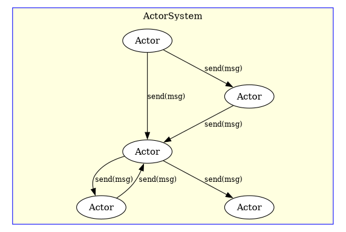
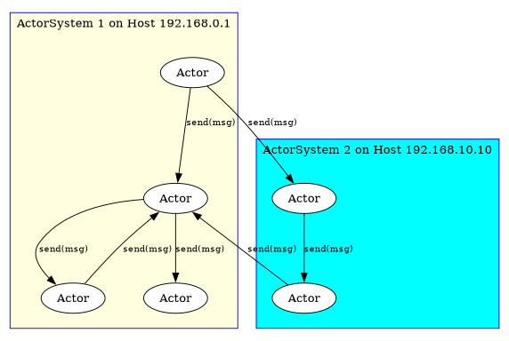
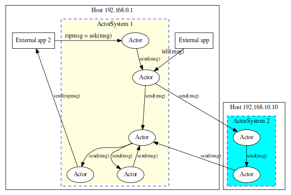

Actors User's Guide
Actors User's Guide
Table of Contents
- 1. Actor Overview
- 2. Using Thespian
- 3. Guidelines for Actors and their messages
- 4. Thespian Actor Feature Extensions
- 4.1. Message Delivery
- 4.2. Dead Letter Handling
- 4.3. Non-startable Actors
- 4.4. PoisonMessage Returns
- 4.5. Top-Level Actors
- 4.6. Named Actors
- 4.7. Timer Messages
- 4.8. Watching File Descriptors
- 4.9. Actor Troupes
- 4.10. ActorSystem Capabilities
- 4.11. Other Actor Systems
- 4.12. Performance
- 4.13. Logging
- 4.14. Actor Code Distribution
- 5. Actor API
- 5.1. myAddress
- 5.2. receiveMessage
- 5.3. createActor
- 5.4. send
- 5.5. wakeupAfter
- 5.6. handleDeadLetters
- 5.7. notifyOnSystemRegistrationChanges
- 5.8. registerSourceAuthority
- 5.9. loadActorSource
- 5.10. unloadActorSource
- 5.11. notifyOnSourceAvailability
- 5.12. actorSystemCapabilityCheck
- 5.13. updateCapability
- 5.14. preRegisterRemoteSystem
- 5.15. deRegisterRemoteSystem
- 5.16. actorSystemShutdown
- 5.17. ActorTypeDispatcher
- 6. ActorSystem API
- 7. ActorSystem Messages
- 7.1. PoisonMessage
- 7.2. WakeupMessage
- 7.3. WatchMessage
- 7.4. ActorExitRequest
- 7.5. ChildActorExited
- 7.6. DeadEnvelope
- 7.7. ActorSystemConventionUpdate
- 7.8. ValidateSource
- 7.9. ValidatedSource
- 7.10. LoadedSource
- 7.11. UnloadedSource
- 7.12. Thespian_StatusReq
- 7.13. Thespian_SystemStatus
- 7.14. Thespian_ActorStatus
- 8. Patterns and Helpers
- 9. ActorSystem Implementations
- 10. Potential Concerns and FAQ
- 11. Deploying Actor-based Projects
1. Actor Overview
1.1. Actors
At the core, an Actor system is simple. An Actor is a standalone entity that receives messages from other Actors and does one of three things:
- Changes internal state
- Creates other Actors
- Sends a finite number of messages to other Actors
Importantly, an Actor cannot access internals of other Actors, and it should not access any globals. The Actor operates solely on information passed to the Actor via a message or else generated internally by the Actor itself.
Actors may only communicate with other Actors by sending messages to those Actors, using known addresses for those target Actors.
Note that messages are unidirectional: there is no required acknowledgement from an Actor that it has received a message. Actors are free to exchange whatever messages their implementation dictates however, including sending acknowledgement messages back to the sender.
In practice, an Actor receiving a message will perform some sort of application-specific processing as a result.
1.2. Actor Addresses
All Actors have an Address which identifies them uniquely within the ActorSystem. The ActorSystem assigns an Address to an Actor and the Actor should treat that Address as an opaque value.
Actors will communicate with other Actors using the ActorAddress of the other actors. ActorAddress values cannot be synthesized. An Actor obtains the ActorAddress of other actors in one of two ways:
- The return value from an Actor create request is an ActorAddress
- Receiving an ActorAddress in a message from another Actor
The ActorSystem determines the actual value of an ActorAddress and the value varies with the implementation of the ActorSystem and the transport mechanism used. Actors may print the string form of ActorAddresses, and they may compare ActorAddresses for equality or inequality and use them as hash values (e.g. for dictionary keys), but they should not otherwise depend on or attempt to utilize the value of an ActorAddress.
An Actor can refer to its own ActorAddress using the .myAddress
property.
1.3. ActorSystem
The ActorSystem is the framework within which the Actors reside. The ActorSystem is responsible for Actor lifecycle management (creating and terminating Actors) and message delivery functions.

1.3.1. Different Implementations
There are multiple different types of ActorSystem implementations. Switching from one system to another can does not require any changes to the Actors that run in those systems: the ActorSystem cleanly abstracts the scheduling and message delivery to allow the Actors to be oblivious to those elements.
Each implementation may require a different type of addressing, but as described previously in Actor Addresses the Actors themselves should treat the ActorAddress objects as opaque. In addition, an Actor cannot generate an ActorAddress; the Actor receives an ActorAddress as a result of creating an Actor or in a message received from another Actor.
Not all implementations are equivalent, however. Although all ActorSystem implementations must support the standard Actor API for Actors to use, some implementations do not support specific features or functionality, and some implementations are not suitable for use with the type of applications the Actors implement.
As an example, some ActorSystems will run Actors as multiple threads, whereas other ActorSystems will run Actors as multiple processes.
Another example is an ActorSystem that uses TCP networking to communicate between Actors v.s. a system that uses local shared-memory queue structures.
The ActorSystem Implementations section provides detailed information about the known ActorSystem implementations including their level of feature support and any known issues.
1.3.2. Multiple Systems
There can be more than one ActorSystem running on the current host system, and there can be ActorSystems running on other host systems that can coordinate activities with the current ActorSystem.
Actors can be created within "remote" ActorSystems as well as the local ActorSystem. This locality flexibility does not affect each Actor implementation at all: the ActorAddress of an Actor can indicate either a remote or local Actor but the ActorAddress itself is opaque to the Actor.

This facility allows for location independence and also provides for essentially unlimited scalability of the underlying support environment.
1.4. External Communications
Actors run in an ActorSystem and communicate with each other using the message sending capability, but it is also typically necessary for the external world to communicate with Actors to initiate activity by those Actors and obtain the corresponding results. External applications use the following ActorSystem operations to communicate with Actors in that system (these operations are not intended for use by Actors themselves):
- tell – sends a message to a target Actor (as specified by the target Actor's ActorAddress)
- ask – sends a message to a target Actor and waits for the Actor to send a response message.
- createActor – creates a new Actor. There is no Parent Actor for the newly created Actor; this Actor is referred to as a "top-level Actor" and it is managed by the ActorSystem itself. No other Actor will be notified if the top-level Actor exits.
To the Actor's themselves the messages delivered via the tell or
ask operations appear to have come from another Actor with an
ActorAddress. The Actor is unaware that these messages originated
from external code.

The ActorSystem API section has more details on the ActorSystem operations.
1.5. Effects
Using an Actor system like Thespian tends to be a transformative experience in code generation. Aspects which were previously difficult to work with (multi-processing, concurrency, inter-process communications and networking, scalability, fault tolerance and recovery, etc) are all handled by the Actor System itself, allowing the Actors to focus on the primary needs of the application itself.
1.6. Comparisons
1.6.1. Message Bus (Pub/Sub) Architecture
The Actor model provides a higher level of abstraction than a Message Bus architecture (also known as a "pub/sub" architecture). An Actor system could be implemented on top of a message-bus architecture; the Actors themselves are unaware of this implementation method.
1.6.2. Logging Systems
Log-based architectures (e.g. Kafka) are fundamentally "pub/sub" architectures that use persistent storage for the published messages. As noted in the Message Bus (Pub/Sub) Architecture, the Actor model is a higher-level abstraction layer that encompasses the pub/sub functionality. The Actor model therefore also abstracts a Logging System with the exception of the persistent storage/replay functionality of the latter.
It is possible to implement message persistence and/or replay functionality for an Actor system by using Actors specifically designed to provide this functionality. The Actor model can thus easily mimic a Logging System.
2. Using Thespian
In order to use Thespian, it must be installed in the current Python
environment. Once installed, all Thespian features are available
within Python by simply importing the actors module from the thespian
package:
>>> import thespian
2.1. Starting an Actor System
An ActorSystem is created simply by instantiating an ActorSystem()
object and specifying the type or "base" of the ActorSystem, as well
as any optional capabilities of that system. For example, to startup
an ActorSystem using the "multiprocTCPBase":
>>> asys = ActorSystem('multiprocTCPBase')
More details on the explicit parameters for this call are found in the ActorSystem section of this document and the known system bases are describe in the ActorSystem Implementations section.
Once created, the running ActorSystem is (by default) a singleton
instance for the current process. This means that subsequent
references can either use the direct reference (e.g. asys in the example
above) or another ActorSystem() instantiation with no parameters.
2.2. Actor Lifecycle
Actors are created on demand and then persist until they receive a request to exit. Actors in a multiprocess System Base are independent of the process that created them and can outlive that process; Actors in a multi-threaded or synchronous System Base exist within the lifetime of the process itself.
Actors exit when explicitly requested to exit, or when the ActorSystem itself is shutdown.
2.2.1. Creating a Top-Level Actor
Actors can be created by other Actors or by external applications making a request to the running ActorSystem. In the former case, the Actor making the request becomes the "Parent Actor" of the newly created Actor, whereas there is no parent in the latter case and the newly created actor is therefore referred to as a "Top-Level" Actor.
The ActorSystem.createActor call creates a Top-Level Actor:
>>> class MyFirstActor(Actor): ... def receiveMessage(self, message, sender): ... pass ... >>> mfa_addr = asys.createActor(MyFirstActor)
The result of the call is the ActorAddress associated with the Actor. The ActorSystem's ask() or tell() methods use this ActorAddress to communicate with the created Actor.
2.2.2. Creating an Actor
Within the ActorSystem an Actor can create another Actor by making a request to the ActorSystem. This is done by calling the createActor() method on its own instance:
>>> class Support(Actor): ... def receiveMessage(self, message, sender): ... pass ... >>> class MyFirstActor(Actor): ... def receiveMessage(self, message, sender): ... if message == 'create another actor': ... newActor = self.createActor(Support)
As with the creation of a Top-Level actor, the createActor() method
of class Actor creates a new Actor instance and returns the ActorAddress
associated with it. The creating Actor can then send messages to the new
Actor via its own send()
method while passing the ActorAddress of the new Actor
(which is newActor in the example above) as the target address.
The creating Actor becomes the
Parent Actor of the created Actor.
2.2.3. Killing an Actor
Actors normally continue to exist and handle messages until they are explicitly killed. An Actor can be killed by sending it an ActorExitRequest message.
The Actor will receive that message directly on its
.receiveMessage() method, which allows the Actor to make any
preparations for its demise, but it cannot refuse to exit and when it
returns from .receiveMessage(), the ActorSystem will kill the
Actor.
A killed Actor's Address is dead-lettered; any subsequent messages sent to the Actor's address will be handled as described in Dead Letter Handling.
2.2.4. Parent Actor
An Actor which creates other Actors automatically becomes the "Parent" of the created Actor(s). In the example in the Creating an Actor section above, the MyFirstActor Actor is the parent of any created Supporting Actor.
The ActorSystem notifies the Parent Actor when any of its child Actors exit. Child Actors are killed when the Parent dies unless the Parent indicates that the ActorExitRequest should not propagate to the children (see method notRecursive()).
Notification of exited children is done via the ChildActorExited
message. This message has the following attributes:
.childAddressto specify the ActorAddress of the child
2.2.5. Actor Failure
If the Actor code handling a message fails by throwing an
exception, the ActorSystem will automatically catch that exception.
The message is automatically re-issued to the Actor to give it a
second chance to handle the message. If the second attempt also
throws an exception, the message is returned via a PoisonMessage
to the caller and that Actor continues with the next message. For
this reason, Actor-based code is typically much simpler than
conventional code because it does not have the overhead of lots of
exception checking and error condition handling.
If a process-based Actor process exits (e.g. via a signal or
un-catcheable exception) then the Thespian Actor System will
(eventually) detect the exited process and deliver a
ChildActorExited message to the parent Actor. It is up to the
parent Actor to determine what to do in this situation, but a
common response is to simply create another instance of that exited
child Actor.
When writing Actor code, the general philosophy is "fail early"; the ActorSystem itself will restart the Actor in the event of a failure and possibly retry the message or abort that specific message. See PoisonMessage Returns for more details.
3. Guidelines for Actors and their messages
- The ActorSystemMessage class is the base class of all ActorSystem
internal messages. Messages sent by Actors should not subclass
ActorSystemMessage, but Actors may differentiate their messages
from Thespian messages by
isinstance()testing against the ActorSystemMessage. - Actors should discard messages they do not recognize.
- Actors should allow unexpected or unreasonable exceptions and errors to cause them to fail. The ActorSystem will restart the actor automatically to handle subsequent messages; the ActorSystem will return the message that caused the failure to the sender in a PoisonMessage wrapper.
The messages that the ActorSystem can synthesize and deliver to an Actor are:
- ActorExitRequest (see Killing an Actor)
- ChildActorExited (see Parent Actor)
- PoisonMessage (see PoisonMessage Returns)
- ActorSystemConventionUpdate (see Other Actor Systems)
- WakeupMessage (see Timer Messages)
Most simple actors can safely ignore any and all messages from the ActorSystem; more sophisticated Actors will handle ActorSystem messages to handle unusual or out-of-band events.
- Use simpleActorSystem for easy testing (and automated unit testing). Then use MultiprocQueue for testing with multiple processes to ensure Actor isolation.
It is a common practice to have an Actor probe for functional aspects of the current environment and update the ActorSystem capabilities based on the results of the probing (see updateCapability). Changing the existing capabilities may result in all existing actors being killed, including the Actor initiating the change.
If the probing Actor is restarted, it has no context regarding the previous probe, but presumably the probe will return the same result as previous, and an updateCapability call that does not actually change capability values does not impact currently running Actors in that ActorSystem. Care should be taken to ensure that the probe Actor reaches a stable condition in this manner.
- Actors are not intended to create other processes or threads; attempts to do so may create undefined behavior.
- Actors should not block indefinitely on IO operations; while the
Actor is running in the
receiveMessage()method it is not able to handle other messages, including ActorSystem internal messages. The Actor will appear to be frozen and this will result in PoisonMessage delivery failures to Actors attempting to communicate with the busy Actor. The ActorSystem is limited by system execution limits. For example, ActorSystems implementing actors as separate processes may be limited by the number of processes that can be created (e.g.
$ ulimit -uon Unix), and ActorSystems using sockets for communications may be limited by the number of file descriptors ($ ulimit -n), the max syn backlog ($ sysctl net.ipv4.tcp_max_syn_backlog), local port ranges ($ sysctl net.ipv4.ip_local_port_range), and various other system limits.Thespian does not make any attempt to adjust these values, and will do its best to work within the available limits (e.g. closing idle sockets when the allowed socket limit is reached), but the user should ensure that the ActorSystem is configured properly for the expected utilization.
4. Thespian Actor Feature Extensions
The Thespian system provides several extended features not present in a simple definition of an Actor environment. These features provide the additional functionality for error-handling, scalability, and enterprise-level deployment of Thespian-based code.
4.1. Message Delivery
Messages are delivered to Actors on a best-effort basis. This means that under normal or even most abnormal circumstances, the ActorSystem effectively guarantees that an Actor's send will reach the intended recipient (eventually). However, under extreme circumstances (grand-mal failure of a multiprocessing system environment, completely hung Actors, etc.) the ActorSystem may not deliver a message; this is why it is classified as best-effort instead of guaranteed delivery.
When the recipient is busy, the outgoing message is queued in the
sending Actor's system space. The sending Actor will retry the
send periodically. The sending Actor can have multiple messages
queued for different targets, but each target is independently handled: messages for a specific target are sent in order but messages
queued to different targets are sent independently. Eventually
the Actor's .send() request will block if there are too many
messages queued for the intended target. This queueing mechanism
provides a "back-pressure" mechanism throughout the system to
prevent too many messages being held in limbo.
If the recipient exits before the sent message is delivered, the message is redirected as described in Dead Letter Handling.
4.1.1. Message Mutability
Thespian does not automatically generate copies of sent messages, but instead sends the original directly. This covers most use cases and has performance advantages in avoidance of extra copying, but it does expose a potential for leakage of information between Actors in some implementations.
class MyActor(Actor): def receiveMessage(self, message, sender): ... self.send(actor2, NewMessage(...)) ...
The above example shows a common use case where the outgoing message
is directly generated, and no longer used or referenced by the
sending Actor after the .send() call. This pattern is entirely
safe in all instances. However, if the sending Actor maintains a
reference to the sent message, as in the example below, that message
data may be modified by code in the recipient.
1: class ActorA(Actor): 2: def receiveMessage(self, message, sender): 3: ... 4: actorb = self.createActor(ActorB) 5: newmsg = NewMessage(foo="foo") 6: self.messages.append(newmsg) 7: self.send(actorb, newmsg) 8: ... 9: for each in self.messages: 10: assert each.foo == "foo" 11: 12: class ActorB(Actor): 13: def receiveMessage(self, message, sender): 14: message.foo = "bar"
In the example shown above, the assertion in line 10 may fail because ActorB has modified ActorA's original copy in line 14. The system Base being used and the timing of execution between the two actors determines whether or not ActorA's message will pass the asserting test. When using a multi-process system base, ActorA's version is independent because the two Actors run as separate processes and so ActorB has a separate copy of the message and does not modify the version that ActorA references, but the simpleSystemBase (for example) would allow this modification.
If an Actor references a message post-send, it should be aware of
this potential for modification. ActorA can make a copy of the
message (e.g. self.send(actorb, copy.deepcopy(newmsg))) to avoid
this issue although this has negative performance implications
(which is why Thespian does not automatically perform this copy).
4.2. Dead Letter Handling
If the ActorSystem is unable to deliver a message to the target Actor (usually because the target Actor is dead or has otherwise exited), the ActorSystem will route that message to Dead Letter handling. A DeadEnvelope wrapper is placed around the message to indicate this situation.
By default, the Dead Letter handling will discard the message in question (possibly logging the event).
It is possible for an Actor to register for handling Dead Letters. In this case, the dead-letter handling Actor receives all messages that could not be delivered to their target address.
Dead letter handling is not a fail-safe to prevent messages from getting lost, but it is a recommended method by which Actors update their knowledge about other Actors that no longer exist and cease sending messages to those other Actors. One reason for this is that the address of the Actor that no longer exists may—at some point—be assigned to a new and completely different Actor; if the original Actor persisted in sending messages to the dead Actor the new Actor would receive those messages which would undoubtably cause confusion.
4.3. Non-startable Actors
Actors that cannot be started at all will be Dead Lettered by the ActorSystem. If an Actor has registered for receiving Dead Letters (see Dead Letter Handling) then it can perform special actions to handle the non-starting Actor, but by default Dead Letter Handling discards all messages sent to a non-starting Actor.
4.4. PoisonMessage Returns
If an Actor experiences a failure (an uncaught exception) when processing a message, the ActorSystem will catch the exception and retry delivery of the message to the target Actor (as describe in Actor Failure).
If the target Actor generates another exception when handling the
message the second time, the ActorSystem will assume that the
message has caused the failure and will wrap the message in a
PoisonMessage wrapper object and send it back to the sender of
the original message. The Actor experiencing the exception is
still live, and delivery of subsequent messages still occurs.
See PoisonMessage for details on the PoisonMessage object.
4.5. Top-Level Actors
Actors created by the external environment are called "Top-Level Actors" and are unique in that they have no "parent" Actor (see Parent Actor). Since there is no Parent Actor, there is nowhere to send a ChildActorExited message when the Actor dies and therefore there is no allowance for restarting Top Level Actors.
Messages sent to a Top Level Actor that has died will still be redirected to the Dead Letter Handler (see Dead Letter Handling).
4.6. Named Actors
Most Actors are created and subsequently referenced by the ActorAddress. Any Actor can use this ActorAddress to send a message to the created Actor.
At times, however, it may be convenient to explicitly refer to a single Actor in the entire system—a Singleton—without knowing the Address of that Actor. To support this, Thespian allows the creation of "Named Actors" where the name given uniquely identifies the Actor.
The initial Actor creation request with the name will create the
requested Actor, but the ActorSystem will remember the Actor
associated with that name andall subsequent Actor creation requests
with the same name will return the originally created Actor (see the
globalName parameter to the ActorSystem's createActor call or the
Actor's createActor call).
It is possible to create any number of Named Actors in the system, although it is the responsibility of the creators to manage the namespace of those Actors.
There are a couple of disadvantages to Named Actors to consider as offsets relative to their convenience:
- The ActorSystem itself manages all Named Actors (similar to Top-Level Actors) rather than a Parent Actor and therefore there is no notification when a Named Actor exits, and any messages sent to a Named Actor that has exited will be sent to the Dead Letter Handler.
- Interaction with Named Actors can be slower than for standard Actors because of the need to perform global lookup and coordination based on the name.
- The globalName is (at present time) unique only to the Actor System within which it is running. There may be multiple Actor Systems running and communicating as part of a Convention (see Other Actor Systems), but the uniqueness of the globalName (and corresponding Actor instance) applies only to the system that has created it. See Multi-system Global Name support for more details and recommendations.
It is recommended (but not required) that only the top-level, coordinating Actors be Named Actors and that most Actors in the system be unnamed Actors to avoid these disadvantages.
4.7. Timer Messages
Normally Actors respond to messages sent to them by other Actors, but sometimes an Actor would like to run again after a timed delay. While it is possible for the Actor to sleep internally, this will prevent it from responding to other messages and cause messages to be queued causing eventual delivery failure (see Message Delivery).
To avoid this, each Actor has a .wakeupAfter() method that can be
called with a specified Python timedelta value. The ActorSystem
will schedule the delivery of a WakeupMessage after that time
period has elapsed. Multiple wakeups can be pending for an Actor at
any single time, and the delivery of the WakeupMessage is
interleaved into the normal incoming message stream for the Actor.
To distinguish WakeupMessage instances that have been scheduled
for different purposes, it is possible to supply a payload
as a second parameter to .wakeupAfter(). The payload can be
arbitrary but it is accrued against the actor's memory until it is
delivered. Hence, it is recommended to keep the payload
reasonably small.
There is no provision for cancelling a pending wakeup; the Actor
should simply ignore the WakeupMessage when it is received.
4.8. Watching File Descriptors
The Actor model itself is a pure specification that is good for concurrent computational tasks, but real-world Actors must often interact with or control the external world via sockets, files, or other interface elements.
One way to accomplish this is to use the .wakeupAfter()
functionality described in the previous section to periodically run
the Actor, whereupon it may check to see if there is any pending I/O
for these interface elements. Each interface element should be
accessed in "non-blocking" mode so that the Actor itself can exit
immediately if there is no work to be done (thereby allowing the
Actor to process new messages as soon as they are received). The
http_server1.py file is an example of a simple HTTP server based on
this model.
The above model is fairly limited however: it is essentially a busy-wait loop that consumes resources even when there is no work to do, and its responsiveness is limited by the period of the wakeup calls. An alternative approach provided by some Thespian SytemBases is the "Watch" extension (as indicated by a System Capability of "Thespian Watch Supported" with a value of True).
When using the Watch extension, the Actor should return a
ThespianWatch object each time its .receiveMessage() method is
called. The ThespianWatch object is initialized with a list of
file descriptors (from sockets or files) that should be watched, and
if any of these have readable data, the Actor will be called with a
WatchMessage message. The WatchMessage.ready member is a list
of the supplied file descriptors that can be read from. The
ThespianWatch is only valid for that single return from the
Actor's .receiveMessage() call, and it must be supplied each time
the .receiveMessage() returns to specify any file descriptors that
should be watched during the wait for the next .receiveMessage()
invocation.
The http_server2.py file is an example of a simple HTTP server that is similar to the http_server1.py but this example is modified to use the Watch extension.
The Watch extension has a number of limitations:
- It is not available for all ActorSystem bases (only those with a system capability of "Thespian Watch Supported" where the value is True).
- It is OS-dependent: on Linux, any file object may be watched, but on Windows only sockets may be watched.
- It only watches for "readable" events, not writable or exception events.
- It implies the use of
select.select(). - There is no timeout (use
.wakeupAfter()for this).
Writing Actors which utilize the Watch extension may siginificantly limit the portability of these Actors.
4.8.1. Blocking Actors
There are some cases where the desired functionality of the Actor is to actually block on external operations. For example, an Actor that acts as a client making calls to an external service might be best written to block on those external calls. When the Actor blocks, other Actors cannot deliver messages to that Actor and backpressure builds (see Message Delivery for more details).
The effect of this blocking functionality is to regulate the number of requests to the external service. If the Actor performed non-blocking requests to the external service, it could flood the service with large numbers of requests.
The disadvantage of the blocking approach is that the Actor is unresponsive while blocked on the external service call. More sophisticated methods involving internal queueing and timeouts could be used as well.
4.9. Actor Troupes
If specified appropriately, multiple instances of an Actor can be created which share the same ActorAddress; this is known as an Actor Troupe.
- Messages sent to the ActorAddress associated with the Troupe may be handled by any of the members of the Troupe,
- A message will be delivered to only one member of the Troupe, but the handling of that message will be performed independently and asynchronously to any other message being handled by a member of the Troupe.
The Actor Troupe allows for scalability and parallelization of individual Actor functionality. Conversely, the use of a single Actor (instead of a Troupe) ensures single-threaded, synchronous handling of messages for that Actor.
See Actor Troupe Support for more details.
4.10. ActorSystem Capabilities
Actors can stipulate the requirements of the ActorSystem that they
will run in by matching "Capabilities" of the ActorSystem. Each
ActorSystem has a set of Capabilities specified as a key/value
dictionary. This dictionary is passed to an Actor's
ActorSystemCapabilityCheck() static method, which examines the
capabilities and returns True or False to indicate whether or
not the current ActorSystem is viable for the Actor.
If the current ActorSystem is rejected for creating the Actor, the ActorSystem will pass the Actor Create request to other ActorSystems to see if any of those systems can create the requested Actor.
The Capabilities of an ActorSystem are free form and the actual capability keys and values are determined by whatever agent specifies them.
All Thespian ActorSystem instances automatically supply a set of common capabilities described in the Common Capabilities section.
4.11. Other Actor Systems
The current ActorSystem can communicate with other ActorSystems to coordinate Actor activities as described in Multiple Systems. To support this, the ActorSystems communicate on known transport addresses to form a "Convention" of ActorSystems.
When new Actors are created, the ActorSystem Capabilities of the ActorSystems that are part of the Convention are used to determine where to start up the requested new Actor.
Remote ActorSystem implementations can be different than the local ActorSystem as long as they properly handle communications between the two ActorSystems and the Actors contained therein.
Actors can also register to be aware of when remote ActorSystems enter or exit the convention. Registered Actors will receive an ActorSystemConventionUpdate message for these events. Actors register for these updates using the notifyOnSystemRegistrationChanges API call.
An Actor System Convention is managed by one or more convention leaders, whose job is to help route actor creation and actor messages between different systems with potentially different capabilities. There is currently Beta support for having multiple convention leaders to provide a measure of fault-tolerance in case a convention leader fails or exits the convention; this support is currently in Beta status and should not be used in a production environment.
Not all ActorSystems support multi-system communications, and those that do are normally of the multi-process variety.
4.11.1. Convention Establishment
The ActorSystem implementation determines the manner in which Conventions are established and should be consulted for details and capabilities, but at the present time there are two main methods for establishing a Convention:
- Members known the Convention Leader and upon startup register with the Convention Leader. In this mode, the Convention Leader operates passively and does not initiate or drive the Convention membership.
The Convention Leader is told about members and actively attempts to establish communications with those members. This is done using the preRegisterRemoteSystem() call. In this mode, the Convention Leader will actively connect to the remote to establish or re-establish connectivity (until the membership is cancelled, for example, with the deRegisterRemoteSystem() call).
This latter method is particularly suited to configurations using the "Outbound Only" connectivity mode (see multiprocTCPBase for example) where the Convention Leader is behind a firewall and can initiate outbound connections to members but those members cannot initiate inbound connections to the Leader.
4.11.2. Convention Administrator Communications
The communications between the Convention Leader admin process and the Convention Member admin process is handled internally by Thespian.
To prevent network overload in unexpected or erroneous circumstances, the Convention communications uses an incremental hysteresis delay on communications between the admin processes; this delay increases when there are active messages being exchanged and decreases during idle times. The overall traffic between two Convention administrators is expected to be relatively low volume, but in unusual circumstances this delay may become observable. The hysteresis delay is designed to protect the overall environment from failure scenarios; please contact the Thespian developers if this hysteresis is adversely affecting your utilization of Thespian.
4.11.3. Multi-system Global Name support
Actor creation is first attempted locally, but if the Actor's requirements do not match the local system's capabilities, other Actor Systems will be invited to create the specified Actor, one at a time. The first Actor System that can create the specified Actor will record the global name in that system; if an Actor System already has an Actor running under that global name, that will satisfy the creation attempt.
Because this global name is only recorded on a single system and
the creation is on a first-found basis, it is not necessarily the
case that the next attempt to call createActor with the same
globalName will query the same system before another system is
found that is willing to create the target actor. As a result,
two createActor() calls with the same globalName value may
result in two different target Actors running on two separate
remote Actor Systems.
An recommended alternative approach is to create a "registrar"
Actor on the Convention Leader system, using a globalName to
ensure that the registrar instance is unique. The registrar can
then register for notification of remote Actor Systems
(notifyOnSystemRegistrationChanges) and when a new remote Actor
System joins the convention, the registrar Actor can create a
specific Actor on that remote system, recording the resulting
address locally in the registrar. When that unique remote Actor
is needed, the registrar can be consulted to obtain the target
address.
4.12. Performance
The Thespian implementation is design principles are: correctness, reliability, responsiveness, and performance — in that order. In general Thespian is intended to be used in situations involving Actors that communicate relatively frequently with each other, but not necessarily with high volumes of data. While there is nothing in the Thespian implementation that prevents exchanging multi-megabyte messages between Actors, the implementation is oriented more towards low latency and responsiveness rather than high-speed streaming.
To further ensure that a Thespian Actor-based application is a good network citizen, there is automatic rate limiting applied to the exchange of messages between Actors. This rate limit is currently set to approximately 80Mib/s – slightly less than the traffic rate that would saturate a 100Mib/s Ethernet link. This is designed to protect the overall environment from runaway failure conditions in the Actor-based application; please contact Thespian development if this is adversely affecting your Actor-base application.
4.13. Logging
The standard Python logging can be used with the Thespian Actor system, although there are some Thespian modifications to logging that improve the logging experience using Thespian.
The optional logDefs argument passed to the ActorSystem()
instantiation (see below) will specify the primary logging
configuration for Thespian and corresponding Actors (regardless of
where the logger is obtained).
The functionality provided by logging in the Thespian environment possibly includes sending log messages to a central Logging actor (as explicitly indicated in the ActorSystem Implementations section). This is needed because the standard Python logging is not multi-process safe and attempts to use it as-is will result in missing or duplicated log messages.
In addition to sending log messages to the Logging actor, the
Convention Manager ActorSystem also receives all log messages from any
conference member that is of WARNING level or above. This
facilitates centralized logging of significant issues across a
multitude of hosts running ActorSystems.
Once the logging configuration has been specified in the
ActorSystem() call, the normal python logging library can be used to
generate logging messages; these messages will be forwarded to the
Logging actor (and possibly the Convention Manager) where the actual
logging will occur.
Log output generated by Actors may automatically have an "actorAddress" attribute added, which can be referenced by the log formatter (in the same manner as the standard attributes such as "levelname" and "message"). The "actorAddress" attribute is not always present because some logging can be generated externally to the actors; the formatting operation cannot account for this, so a filter should be used to ensure the right formatter is specified.
The logging configuration is specified using the standard Python Logging dictionary specification (documented in https://docs.python.org/3/library/logging.config.html). For example:
import logging class actorLogFilter(logging.Filter): def filter(self, logrecord): return 'actorAddress' in logrecord.__dict__ class notActorLogFilter(logging.Filter): def filter(self, logrecord): return 'actorAddress' not in logrecord.__dict__ logcfg = { 'version': 1, 'formatters': { 'normal': {'format': '%(levelname)-8s %(message)s'}, 'actor': {'format': '%(levelname)-8s %(actorAddress)s => %(message)s'}}, 'filters': { 'isActorLog': { '()': actorLogFilter}, 'notActorLog': { '()': notActorLogFilter}}, 'handlers': { 'h1': {'class': 'logging.FileHandler', 'filename': 'example.log', 'formatter': 'normal', 'filters': ['notActorLog'], 'level': logging.INFO}, 'h2': {'class': 'logging.FileHandler', 'filename': 'example.log', 'formatter': 'actor', 'filters': ['isActorLog'], 'level': logging.INFO},}, 'loggers' : { '': {'handlers': ['h1', 'h2'], 'level': logging.DEBUG}} }
This logging configuration complexity is unfortunately imposed by the
need to select the proper formatter, but this complexity can be
captured in an auxiliary file and is only needed for passing to the
ActorSystem() instantiation.
4.13.1. Logging Level Management
When each Actor is started, the base level of messages forwarded to
the Logging Actor for that started Actor is based on the minimum
logging level specified in the logDefs dictionary (for any
handlers, loggers, or root entry).
- If no
logDefsdictionary is specified, the base level is 0. - If any
handler,loggers, or therootentry does not explicitly specify the logging level, the Python default level is 0, which will be the minimum logging level extracted from thelogDefsconfiguration. - A logging level of 0 results in all messages being forwarded to the Logging Actor.
- For Thespian versions 3.10.1 and before, the
logDefsdoes not affect the logging level of each Actor and the level is effectively 1.
In implementation terms, the forwarding to the Logging Actor is implemented as a Log Handler. In Python, there may be multiple Log Handlers defined but the handler which forwards to the Logging Actor is pre-declared.
The Python Logging API is implemented via a Logger object, which provides its own filters and log-level thresholds before passing log messages to the handlers for performing the logging. Each Actor can adjust the logging level for the Logger object to modify the level at which messages are logged, but setting the Logger's log-level below the level that the Logging Actor Handler was started with has no effect: the Logger will low log-level messages to the Handler but they will fail the handler's threshold check and not be forwarded to the Logging Actor.
Note: the Python Logging API's do not allow a Handler to be retrieved from the Logging framework, so it is not possible for the Actor to modify the logging threshold level of the Handler.
4.13.2. Logging Transmit Overruns
Some libraries or python code will perform significant amounts of
logging, especially at the DEBUG level, since normally these are not
displayed but they can be useful when debugging problem situations.
This can, however, create an issue in Thespian if the logDefs are
not specified and the Actor does not set a Logger level: all of
these log messages will be forwarded to the Logging Actor. Thespian
maintains an outbound message threshold; if this threshold is exceeded
(e.g. by too many queued log messages), then the Actor is placed into
transmit-only mode until the queue has dropped back below a lower
threshold (see Message Delivery for more details). This can degrade
the Actor's responsiveness due to messages that are subsequently
discarded by the Logging Actor.
Prior and up to Thespian release 3.10.1, the only way to address this
is for the Actor to change the Logger logging level
(e.g. logging.getLogger().setLevel(logging.WARNING)) so that those
messages are dropped by the Logger and not forwarded to the Logging
Actor. After Thespian 3.10.1, the minimum logging level in the
logDefs supplied to the ActorSystem() initialization is applied to
each Actor created and can be used to control the logging threshold
even for Actors that don't dynamically change their level.
4.13.3. Thespian Internals Logging
Because Thespian instruments the standard logging functionality to provide the Convention forwarding ability, it is not possible to use logging from within most of Thespian itself because this can cause infinite recursions hangs.
Thespian internals write logging information to a file
(/tmp/thespian.log by default) with a single backup rotation of that
file at a specified size limit. This internal logging can be
controlled via the following environment variables that must be set
before the ActorSystem is started:
- THESPLOG_FILE
- specifies the filepath for the Thespian
internals logging. By default this writes to
/tmp/thespian.log. - THESPLOG_FILE_MAXSIZE
- specifies the maximum size for the
Thespian internals logging file. There is a single backup
rotation (
{filepath}.old), so the actual space consumed can reach twice this value. The default value of 50KB is relatively small, but this file should normally not be needed by developers writing Actors and is usually only needed by developers modifying Thespian internals. - THESPLOG_THRESHOLD
- specifies the minimum log level that will get
written the THESPLOG_FILE. The default value is
WARNINGand the following log levels are recognized:CRITICAL,ERROR,WARNING,INFO, andDEBUG.
4.14. Actor Code Distribution
The Thespian ActorSystem provides a feature to specify the code used for Actor implementations.
By default, an Actor implementation is obtained by importing from
the current environment and then passing that object to a
createActor() call. When used in this default manner, all of the
.py sources used to implement Actors must be in the import path of
the Thespian ActorSystem itself.
With the Code Distribution feature provided by Thespian it is possible to load specific Actor code as provided by a (possibly encrypted) zipfile. The zipfile can be dynamically loaded into an already-running Thespian ActorSystem. This provides a number of advantages:
- The Thespian ActorSystem can be distributed and activated as a standalone element. The code for Actors to be run within the system can be distributed separately.
- Actor implementation code can be protected by encryption, allowing that code to run only when the proper decryption key is provided. This provides both distribution security (Python source files are not readable by anyone with access to the computer on which they are installed) and validation of authorization to interact with and execute the Actor code (especially in cases where the ActorSystem runs with elevated privileges).
- Multiple unrelated sets of Actors can share the same ActorSystem without adverse interactions.
- Running Actor implementations can be updated without requiring the entire ActorSystem to be stopped and restarted. This is especially useful when the ActorSystem is hosting multiple different and independent sets of Actors.
- Multiple instances of the same set of Actors can be running in the same ActorSystem simultaneously. This is especially useful when upgrading to a new version of a set of Actors where all new messages are directed to the new Actors while allowing all messages circulating between the older Actors to drain; in this scenario there is no downtime to customers when upgrading an Actor implementation.
When the Thespian Actor Code Distribution mechanism is used in a multi-ActorSystem configuration (e.g. cooperating ActorSystems between several computers), it is only necessary to load the zipfile into one ActorSystem. The different ActorSystems will automatically pull the zipfile from the source system to support a createActor operations that would occur in that other ActorSystems (e.g. due to system capabilities or actor requirements). This mechanism allows the following additional benefits:
- Actor code distribution can be done by simply loading the new code version into a single ActorSystem (usually the convention leader) and all other ActorSystems will automatically update with that code on an as-needed basis.
- Actor implementation synchronization. The createActor will automatically synchronize the current zipfile version to the target ActorSystem before instantiating the new Actor, thereby ensuring that the local Actor is communicating with an up-to-date version of the remote Actor. There is no longer a risk that a newer version of an Actor will attempt to communicate with a remote Actor instance that is out-of-date and encounter version-related problems.
The loadActorSource operation describes this capability in more detail, including security protections associated with this feature.
The Thespian Director document describes the Director utility and how it can help to use loadable Actor sources in a safe and practical manner.
5. Actor API
The Actor API is the set of operations that a running Actor can
perform. Thespian implements this API as a set of methods on an
Actor baseclass that all running Actors should subclass.
The Actor API is made available by importing the thespian.actors
module.
Each Actor is represented by an Actor baseclass:
from thespian.actors import Actor class MyActor(Actor): ...
Versioning of the Actor API and the ActorSystem are described in ActorSystem Capabilities.
It is important to note that the Actor is not fully initialized
until the __init__ function completes, so no actor-level
operations (e.g. self.send(), self.createActor()) should be
performed in the class's __init__ function. Actor initialization
can be handled in the receiveMessage in a number of ways,
including:
- detecting
Nonevalues of members and replacing them with the results of initialization at that time - Handling a specific initialization message sent by some other entity.
- A combination of the above, using the
initializing_messagesdecorator provided by thethespian/initmsgs.pyhelper.
5.1. myAddress
self.myAddress
This property is the ActorAddress of this Actor.
5.2. receiveMessage
def receiveMessage(self, message, sender): ...
This method is the primary entry point into the Actor to handle
received messages. Each subclass should override the base Actor
receiveMessage() method as appropriate. The message argument is
the message being received, and the sender is the ActorAddress of
the Actor (or External Communications endpoint) sending the
message.
The message can be discarded once it has been handled. As described previously in Actors, there are three things an Actor can do when handling a message:
- Update internal state
- Create a finite number of other Actors
- Send a finite number of messages to other Actors
If the processing of the message causes an exception, the failure will be caught by the ActorSystem and the message may be retried or returned to the sender as described in PoisonMessage Returns. Note that the original copy of the receive message is passed to the Actor with each attempt; if the Actor modifies the message before failing with an exception, the retried or Poison-returned version will contain the modifications made by the original attempt.
5.2.1. Return Value
Ordinarily the return value from an Actor's receiveMessage()
method is ignored, but if the underlying ActorSystem implementation
supports the Thespian Watch extension (see Watching File
Descriptors) then the Actor may return a ThespianWatch object which
specifies a list of the file numbers to watch for incoming data;
the Actor's receiveMessage() will subsequently be passed a
WatchMessage with the file number(s) for which data is available.
Any other value or object returned from .receiveMessage() will be
ignored.
The object is initialized with the list of file numbers to watch for incoming data from.
from thespian.actors import Actor, ThespianWatch class MyActor(Actor): def receiveMessage(self, message, sender): ...process message... return ThespianWatch([self.socket1.fileno(), self.socket2.fileno()])
Any invalid or closed file descriptors will be ignored. The file
descriptors are watched only until the next call to the Actor's
.receiveMessage() method, so each call to this method must return
the set of file descriptors that should be watched when it exits.
5.3. createActor
newAddress = self.createActor(self, actorClass, targetActorRequirements=None, globalName=None, sourceHash=None)
This method is called by the Actor to create a new Actor
represented by the specified actorClass. The actorClass may be
specified as either a class object or as a module-qualified string
(e.g. "foo.bar.BarActor" will search for class BarActor in the
bar.py in the foo directory). The InvalidActorSpecification
exception will be thrown if the actorClass is not specified in a
valid manner.
The optional targetActorRequirements argument is a value that
will be passed passed to the actorSystemCapabilityCheck to use for
validating whether the Actor can be started within the current
ActorSystem environment (see ActorSystem Capabilities). The value
specified for this argument can be anything the target Actor's
actorSystemCapabilityCheck() method can understand, although
typically it is a Python dictionary.
The globalName argument, if specified, should be a string
specifying the "name" of the Actor within the ActorSystem. As
describe in Named Actors, this name allows the Actor to be a
system-wide singleton and to be uniquely identified and referenced
in a manner additional to the ActorAddress of the actor.
The sourceHash argument, if specified, indicates a loaded source
in which the actorClass should be found when attempting to load
the actorClass source and start the Actor. See
ActorSys.createActor() for more details.
The context for the created Actor will be the context under which the Thespian system was started. This means that if the Thespian system was started as root, then all Actors will run as root.
The source for the actorClass to be created is established by
the current Actor, relative to any loadActorSource operation that
apply to the creating Actor itself:
- If an Actor class is specified directly, that class is obtained via import operations. These import operations use the lookup search path that already use a searchpath that contains any loaded actor source operations.
- If a module-qualified string specifies the
actorClass, then the lookup of that class will use the same source hash lookup path that the Actor itself came from. - It is not possible to specify an alternate source file hash
when performing a
createActor()call from within an Actor (only the ActorSystemcreateActor()method can do that). - If the target Actor must be instantiated in a separate
ActorSystem and that ActorSystem does not have the
loadActorSource for the target Actor available, it will
automatically obtain that loadActorSource file from the current
system and then start the target Actor from that source. This
can be used as a code distribution methodology for the
ActorSystems' environment. The ActorSystem that initiated the
createActor()call with the hash must already have that source loaded.
The return value of this method is the ActorAddress of the newly-created Actor. Note that this address may be provided even before the target Actor is instantiated and is ready for handling messages. The ActorSystem will automatically buffer any messages sent to the new Actor until that Actor is ready; the creating Actor is free to send messages immediately on completion of this request and does not need to be concerned with the asynchronous startup aspect of the target Actor. However, due to this asynchronous startup, it is possible that the new Actor cannot be started at all; in this event all messages intended for the new target Actor will be handled as described in the Dead Letter Handling section.
5.3.1. globalName
The parent for a Named Actor (created when the globalName argument
is specified) is the ActorSystem itself, rather than the requesting
Actor. This is because there may be multiple createActor requests
for the same global name and they should all return the Address of
the same Actor, but an Actor cannot have multiple Parents.
A Named Actor persists as long as it is not killed (via an ActorExitRequest) and can be referenced by any Actor requesting a create with the same globalName.
When a Named Actor exits, only the ActorSystem is aware of the exit; there is no ChildActorExited notification sent to any Actors that requested the creation of the Named Actor.
5.3.2. Actor Creation Gotchas
There are a few issues to be aware of when creating Actors:
When creating an actor using a string specification of the Actor Class, the name must be a fully-qualified module specification and not simply the name of an ActorClass in the current source.
While the latter would be convenient, it is not possible for remote processes to have access to the current source frame to load these Actors. One solution is to use a class reference rather than a string (but see the next issue).
The InvalidActorSpecification exception will be thrown if the actorClass is not specified in a valid manner.
Actor classes must either have been in the system path when the ActorSystem was created, or they must exist in a loaded Actor Source (see loadActorSource). Many ActorSystems use separate processes to manage and create new Actors, so any changes in the current process after the ActorSystem process is started up will not be visible to the latter.
This is also especially surprising when modifying the implementation of the Actor and retrying; the new code will not seem to be running, and indeed it is not because the previous version of the code is still existing in the running Admin. The Admin must be stopped and restarted as part of the new code implementation to have that new implementation available to it.
- Creating an actor inside the main
.pyfile run from the command line and specifying the class object does not work because the module to which the class is assigned is "main", which cannot be resolved by the Admin. There are two solutions:- Place the Actor in a different file and import it explicitly from that file (which therefore correctly idenfifies that file as the module context for the Actor).
- Create a loadable module instead and reference the actor by a name/import-path string.
5.4. send
self.send(targetAddress, message)
This is the method used to send a message from the current Actor
to another Actor as identified by the targetAddress. The
message can be anything the current Actor desires, although most
ActorSystem implementations will require that the message can be
pickled by the Python pickle utility.
There is no response to the send, and the message is delivered to
the target asynchronously. There is no guarantee that the target
has received the message by the time the .send() method returns.
The ActorSystem delivers the message at some point by best-effort,
sending the message to Dead Letter Handling if it cannot be
delivered.
5.5. wakeupAfter
self.wakeupAfter(timePeriod, payload=None)
The timePeriod specifies a Python datetime.timedelta period.
When this time period has expired, the ActorSystem will deliver a
WakeupMessage to the Actor via the normal .receiveMessage()
entrypoint (the sender will be the Actor itself). See Timer
Messages for more information.
The payload argument can be used to specify a value that is held
by Thespian and returned in the WakeupMessage when the elapsed
time has expired. The payload can be used by the Actor to
provide context for the wakeup operation. The payload value is
arbitrary, but it is accrued against the actor's memory until it
is delivered; hence, it is recommended to keep the payload
reasonably small.
5.6. handleDeadLetters
self.handleDeadLetters(startHandling=True)
This method can be called to register or de-register this Actor for handling Dead Letters.
5.7. notifyOnSystemRegistrationChanges
self.notifyOnSystemRegistrationChanges(startHandling=True)
This method can be called to register or de-register this Actor for handling system registration events from other ActorSystems (see Other Actor Systems) via ActorSystemConventionUpdate messages.
5.8. registerSourceAuthority
self.registerSourceAuthority()
This method registers the current Actor as the Source Authority handler for the current ActorSystem as described in the Security Considerations section of the loadActorSource ActorSystem API call. Once registered, this Actor will receive ValidateSource messages and be responsible for decrypting (if necessary) and determining authorization for loaded sources to run.
The current Actor continues as the Source Authority until another Actor registers for this role.
5.9. loadActorSource
sourceHash = self.loadActorSource(fileref)
The loadActorSource() method is used to load a (possibly
encrypted) zipfile containing Python source code in standard Python
zipimport format (via PEP3021 methodologies). The return value
is an internally-generated hash value identifying that loaded source
zipfile that can be used in subsequent createActor calls to
instantiate Actors found in that sourcefile.
There must be a valid Source Authority registered (via the registerSourceAuthority method) to validate the loaded source; by default this method does nothing if no Source Authority has been loaded. See Security Considerations for more information.
See the description of the same function in the ActorSystem API section for more details.
5.10. unloadActorSource
self.unloadActorSource(sourceHash)
The unloadActorSource() method is used to unload a source zipfile
previously loaded by the loadActorSource operation.
See the description of the same function in the ActorSystem API section for more details.
5.11. notifyOnSourceAvailability
self.notifyOnSourceAvailability(enable=True)
This method can be called to register or de-register (based on the
enable argument) this Actor for being informed of loaded or
unloaded source loads. Load notifications are delivered via the
LoadedSource message and source unloads generate UnloadedSource
messages to the notification registrant.
Registration is with the local actor system only, and notifications are only for loads and unloads of available sources in the local system; remote registration and corresponding notifications are available, but are not triggered by local load or unload events.
5.12. actorSystemCapabilityCheck
def actorSystemCapabilityCheck(capabilities, requirements=None): return True
This is a static method provided by the Actor object that is called to see if the Actor can be created within the context of the current ActorSystem.
The capabilities argument specifies the key/value dictionary of
capabilities of the current ActorSystem. ActorSystem capabilities
are free-form and are determined solely by agents specifying those
capabilities (see ActorSystem Capabilities).
The optional requirements argument specifies the additional
requirements that the creating Actor specified in the
.createActor() call.
The .actorSystemCapabilityCheck() should return True to indicate
that the Actor may be created in the current ActorSystem, or False
to indicate otherwise. It is free to base this decision on any,
all, or none of the capabilities or requirements provided.
This static method may also be called to re-validate the Actor's viability if the capabilities of its ActorSystem are updated (as described in the updateCapability section), and if it returns False then the existing Actor will be killed with an ActorExitRequest message.
5.12.1. requireCapability decorator
To facilitate easy specification of requirements, there is a
requireCapability class decorator defined which can be used to
specify that a capability must be present in the system
capabilities.
@requireCapability(capabilityName[, capabilityValue])
The requireCapability decorator can also specify a
value for the capability; if no value is specified then the
capability's value must be "truthy" (i.e. some expression that
evaluates as truthful).
The decorator can be repeated multiple times for a single Actor and
it may be used in conjunction with an actual
actorSystemCapabilityCheck() method.
For example:
class MyActor(Actor): @staticmethod def actorSystemCapabilityCheck(capabilities, requirements): return capabilities.get('Has Lightbulb', False) and \ capabilities.get('Lit', False) and \ capabilities.get('Color', 'none') == 'Yellow' def receiveMessage(self, msg, sender): pass
is equivalent to the following combined use:
@requireCapability('Has Lightbulb') @requireCapability('Lit') class MyActor(Actor): @staticmethod def actorSystemCapabilityCheck(capabilities, requirements): return capabilities.get('Color', 'none') == 'Yellow' def receiveMessage(self, msg, sender): pass
or the equivalent use of only the decorator:
@requireCapability('Has Lightbulb') @requireCapability('Lit') @requireCapability('Color', 'Yellow') class MyActor(Actor): def receiveMessage(self, msg, sender): pass
In the above examples, the MyActor Actor can be instantiated
in an ActorSystem that had the capabilities of:
{
'Has Lightbulb': 5,
'Lit': True,
'Color' : 'Yellow'
}
Note that the value of 5 is "true", as compared to a value of 0 that is "false". Any value that would represent as true in an if expression is a valid value.
An example of a much simpler case:
class MyActor(Actor): @staticmethod def actorSystemCapabilityCheck(capabilities, requirements): return capabilities.get('Has Lightbulb', False) def receiveMessage(self, msg, sender): pass
is equivalent to:
@requireCapability('Has Lightbulb') class MyActor(Actor): def receiveMessage(self, msg, sender): pass
5.13. updateCapability
The updateCapability() method is used to update the capabilities of
the current ActorSystem this Actor is running in (there is a
corresponding method on the ActorSystem for externally-specified
updates; see the ActorSystem API for that version).
self.updateCapability(capabilityName, capabilityValue=None)
If the capability value is specified and is not None, the specified capability already exists, its value updated, otherwise it is created with the specified value.
If the capability value is not specified or is None, the specified capability is removed from the ActorSystem if it exists.
If the capabilities of the ActorSystem are modified by this method (i.e. the capability value is not already set as requested) then all Actors within that ActorSystem are re-validated by calling their actorSystemCapabilityCheck static method and sending them an ActorExitRequest if the capability check call returns false. This could result in killing the Actor that initiated the capability exchange, even if new capabilities are added. Actors may be recreated as desired; the new Actors will validate against the new set of capabilities.
The current set of ActorSystem capabilities can be obtained by issuing a Thespian_StatusReq to the ActorSystem.
5.14. preRegisterRemoteSystem
The preRegisterRemoteSystem() method is used to inform the local
ActorSystem about a remote ActorSystem.
This method is normally not used or needed, and should be avoided if possible.
Normally ActorSystems will communicate with each other and automatically perform discovery, and Actors themselves should not be aware or involved this functionality.
However, there are certain transport configurations where this auto-discovery is not possible. In these configurations, this method can be used to initiate communications between the two ActorSystems. This method will only work for ActorSystem bases that support Conventions (as describe in the Other Actor Systems section).
Because the remote System and the local System cannot
perform auto-discovery, the local system also assumes
responsibility for actively initiating convention membership checks
of the pre-registered remote system. These pre-registration checks
will continue to occur periodically until the pre-registered remote
member is removed (via the deRegisterRemoteSystem() method
described below). The current system will also automatically
become the Convention Leader for the remote system.
self.preRegisterRemoteSystem(remoteSystemAddress,
remoteSystemCapabilities)
The remoteSystemAddress parameter is not a true Actor Address: it
specifies the remote system address in string format in a syntax
that will be interpreted by the local ActorSystem. If the
specified string is not recognizeable by the local ActorSystem, no
Convention membership will be added. For example, the
multiprocTCPBase and multiprocUDPBase system bases can recognize
"ipaddr:port" formats.
The remoteSystemCapabilities parameter specifies a dictionary of
the initial remote system capabilities. These capabilities will be
updated with actual capabilities once the two systems have
established communications.
5.15. deRegisterRemoteSystem
The deRegisterRemoteSystem() method is used to unregister a
previously registered remote system. This method is the
counterpart to the preRegisterRemoteSystem() method and has all
the same warnings and caveats that apply to the latter.
If the remote ActorSystem is still running and communicating with the local ActorSystem then it will automatically re-register itself despite having been de-registered by this method.
If there is no remote ActorSystem registered for the specified address, or if the address cannot be successfully recognized by the local ActorSystem, this method will simply return with no effect.
self.preRegisterRemoteSystem(remoteSystemAddress)
The remoteSystemAddress parameter may be specified in the same
manner as for the preRegisterRemoteSystem() and is usually the
same value that was originally passed to the latter method. The
remoteSystemAddress parameter may also be an actual ActorAddress
(e.g. the same address that would be provided in the
ActorSystemConventionUpdate messages).
5.16. actorSystemShutdown
The actorSystemShutdown() method can be called by an actor to
shutdown the entire local ActorSystem, including all Actors
currently running under that system. This method should not
normally be needed and is intended only for situations where the
local running system is being deactivated.
The shutdown operation will be initiated immediately: ActorExitRequests will be sent to all locally running Actors.
self.actorSystemShutdown()
Use this method with caution.
5.17. ActorTypeDispatcher
An alternative base class for creating Actors is the
ActorTypeDispatcher which extends the Actor base class. The
ActorTypeDispatcher defines a `receiveMessage` method that
automatically determines the type of incoming messages and calls a
receive method related to that type instead of the generic
receiveMessage() called by the Actor base class. The type-based
receive methods are named "receiveMsg_TYPE" where TYPE is the actual
type.
class Typer(ActorTypeDispatcher): def receiveMsg_str(self, message, sender): self.send(sender, "Got a string") def receiveMsg_int(self, message, sender): self.send(sender, "Got an int")
This dispatching works for user-defined classes as well as built-in types, and will iterate through the base classes if a higher-level handler is not found.
class BaseMsg(object): pass class ShortMsg(BaseMsg): def __init__(self, report = ''): self.report = report class LongMsg(BaseMsg): pass class Typer(ActorTypeDispatcher): def receiveMsg_str(self, message, sender): self.send(sender, "Got a string") def receiveMsg_int(self, message, sender): self.send(sender, "Got an int") def receiveMsg_LongMsg(self, message, sender): self.send(sender, "Got a long message") def receiveMsg_BaseMsg(self, message, sender): self.send(sender, "Got a message")
>>> asys = ActorSystem() >>> t = asys.createActor(Typer) >>> print(asys.ask(t, 1)) Got an int >>> print(asys.ask(t, "1")) Got a string >>> print(asys.ask(t, LongMsg())) Got a long message >>> print(asys.ask(t, ShortMsg())) Got a message >>>
The `receiveMessage` method is defined by `ActorTypeDispatcher` so the actor subclassing it should not define that method; if the `receiveMessage` is defined in the subclass then it will override the `ActorTypeDispatcher`'s implementation and all message handling will revert to the subclass's `receiveMessage` method.
5.17.1. Derived Classes
This receive method lookup also works for derived classes:
class Subtyper(Typer): def receiveMsg_ShortMsg(self, message, sender): self.send(sender, "Got a short message")
>>> asys = ActorSystem() >>> a1 = asys.createActor(Typer) >>> print(asys.ask(a1, ShortMsg())) Got a message >>> print(asys.ask(a1, LongMsg())) Got a long message >>> >>> a2 = asys.createActor(Subtyper) >>> print(asys.ask(a2, ShortMsg())) Got a short message >>> print(asys.ask(a2, LongMsg())) Got a long message >>>
The matching does not rely on import path specifications. In the
following example, the creation of Message2 requires import
qualification, but the ActorTypeDispatcher-supported
receiveMsg_Message1 will match Message1 without the import
namespace prefix:
1: class Message1: ... 2: class Message2: ...
1: import messagedefs 2: 3: class SendActor(ActorTypeDispatcher): 4: def receiveMsg_Message1(self, msg, sender): 5: self.send(sender, messagedefs.Message2()) 6: 7: class RcvActor(ActorTypeDispatcher): 8: def receiveMsg_Message2(self, msg, sender): 9: ...
5.17.2. Unrecognized Messages
Normally the ActorTypeDispatcher will quietly discard messages that do
not match any of the type-related receive methods. It is possible to
specify a fallback handler for the ActorTypeDispatcher if the type
is not explicitly recognized by defining the
receiveUnrecognizedMessage() method.
class Subtyper2(Typer): def receiveMsg_ShortMsg(self, message, sender): self.send(sender, "Got a short message") def receiveUnrecognizedMessage(self, message, sender): self.send(sender, "Did not recognize the message type: %s"%type(message))
>>> asys = ActorSystem() >>> st = asys.createActor(Subtyper2) >>> print(asys.ask(st, ShortMsg())) Got a short message >>> print(asys.ask(st, 1)) Got an int >>> print(asys.ask(st, 1.0)) Did not recognize the message type: <type 'float'> >>>
It is important to note that an Actor based on the
ActorTypeDispatcher that is also using the 5.2.1
functionality should implement the receiveUnrecognizedMessage
entrypointto ensure that a proper ThespianWatch message is
returned when an unrecognized message is received.
5.17.3. Type Handling Deferral
In a normal Python subclass, it is possible for a method in the
subclass to call a method in the base class by using the super()
function:
class ClassA(object): def method1(self): pass class ClassB(object): def method1(self, val): if val == 1: pass super(ClassB, self).method1()
However, this super() technique is not as useful when using the
ActorTypeDispatcher because it only looks for the specifically
identified method, which would abort the receive handler search
operation implemented by ActorTypeDispatcher:
class SubTyper3(Typer): def receiveMsg_ShortMsg(self, message, sender): if "private" in message.report: super(SubTyper3, self).receiveMsg_ShortMsg(self, message, sender) else: self.send(sender, "Got a public short message")
>>> asys = ActorSystem()
>>> st = asys.createActor(SubTyper3)
>>> print(asys.ask(st, ShortMsg("This is public")), 2)
Got a public short message
>>> print(asys.ask(st, ShortMsg("This is private")), 2)
# Poison message trace because super has no 'receiveMsg_ShortMsg'
>>>
The last step in the above example timed out (returning None)
because there is no base class with an explicity
receiveMsg_ShortMsg() method. Instead, the current method should
return ActorTypeDispatcher.SUPER to instruct the
ActorTypeDispatcher to continue the normal search,
class SubTyper4(Typer): def receiveMsg_ShortMsg(self, message, sender): if "private" in message.report: return self.SUPER else: self.send(sender, "Got a public short message")
>>> asys = ActorSystem()
>>> st = asys.createActor(SubTyper4)
>>> print(asys.ask(st, ShortMsg("This is public"), 2))
Got a public short message
>>> print(asys.ask(st, ShortMsg("This is private"), 2))
Got a message
>>>
6. ActorSystem API
The ActorSystem is created or connected-to by instantiating the ActorSystem object. External applications use the ActorSystem API to interact with Actors running within that system.
The ActorSystem API is made available by importing the
thespian.actors module:
import thespian.actors
6.1. Exceptions
All exceptions generated by the ActorSystem itself are based on the
ActorSystemException base class.
Exceptions which are generated as a result of unexpected failures
within calls to the ActorSystem are based on the
ActorSystemFailure base class. It is not expected that these are
caused by an application error or that they can be retried and/or
fixed by the application to expect a successful result.
The following shows the heirarchy of defined Thespian exceptions:
ActorSystemExceptionInvalidActorAddressNoCompatibleSystemForActorActorSystemFailureActorSystemStartupFailureActorSystemRequestTimeout
InvalidActorSourceHashInvalidActorSpecification
6.2. ActorSystem
actorSys = ActorSystem(systemBase = None, capabilities = None, logDefs = None, transientUnique = False)
The systemBase argument should specify which ActorSystem
implementation base should be used for this ActorSystem, as
selected from those systems describe in the ActorSystem Implementations section. If systemBase is None, this call will
check to see if there was a previous call to ActorSystem in the
current process and if so, re-use the systemBase from the
previous call. If there is no previous call, the default system
base is the simpleSystemBase (see simpleSystemBase).
The capabilities argument should be a dictionary of capability
keys and values as describe in the ActorSystem Capabilities
section. These capabilities form the initial set of capabilities
for the ActorSystem if it is started; the capabilities are ignored
if an ActorSystem is already running.
The logDefs argument is used to specify a logging configuration
dictionary (in standard logdict format). If not specified, a
default logging configuration is usually supplied. If specified
as False, then no logging configuration is supplied; this latter
is useful in situations where another component is attempting to
establish a logging configuration (e.g. nosetest logcapture). As
described in the Logging section, the Convention Leader will
receive forwarding of log messages at Warning level or higher,
providing a centralized logging capability.
Normally the created ActorSystem becomes a process-wide (and
possibly system-wide) singleton instance. The transientUnique
argument may be set to true to get a new, un-registered
ActorSystem. This leads to the following behavior:
ActorSystem(...)- return an object which references an ActorSystem with the configuration specified by the arguments, creating a new ActorSystem if necessary. Subsequent calls with the same arguments will get an instance referencing that same ActorSystem.
ActorSystem()return an object which references any previous ActorSystem created by this process. If there is no ActorSystem, it will create one with the default parameters (currently defaulting to a "simpleSystemBase" instance). This is a convenience mechanism for accessing an ActorSystem that may have been created elsewhere in the application where more specific knowledge regarding the creation parameters was available.
def start_system(): cfg = read_config_file() ActorSystem(systemBase=cfg.system_base, capabilities = { 'foo': cfg.foo_capability, ...}, ...) def do_something(): mine = ActorSystem().createActor(MyActor) r = ActorSystem().ask(mine, 'ready?', timedelta(seconds=3)) ... if __name__ == "__main__": start_system() do_something()The following is equivalent to the above, although it requires extra code to pass the actor system to the various components needing it:
def start_system(): cfg = read_config_file() asys = ActorSystem(systemBase=cfg.system_base, capabilities = { 'foo': cfg.foo_capability, ...}, ...) return asys def do_something(asys): mine = asys.createActor(MyActor) r = asys.ask(mine, 'ready?', timedelta(seconds=3)) ... if __name__ == "__main__": asys = start_system() do_something(asys)ActorSystem(..., transientUnique=True)- ensures that a new ActorSystem is created instead of retrieving a previously-created ActorSystem. Note that the other arguments should specify the configuration of the new ActorSystem, and global resource collisions (e.g. port names) will prevent the new ActorSystem from being created.
6.3. ActorSystem.shutdown
actorSys.shutdown()
The shutdown() ActorSystem method is used to terminate an
ActorSystem and all Actors running in that system. If issued to a
ActorSystem that is part of a multi-system Convention that
ActorSystem is shutdown and the other Convention members are
notified (but they continue to exist).
As described previously, the ActorSystem is a process-global
singleton that may be a system-wide singleton, depending on the
system base used (see ActorSystem Implementations for details).
The shutdown() method is the proper way to stop those
process-wide or system-wide ActorSystems when they are no longer
needed. The decision of when to do this is left to the user; in
some situations the ActorSystem should be a long-running service
that matches the lifetime of the system itself.
If the ActorSystem was started with transientUnique = True, the
shutdown() should still be used to properly stop the current
ActorSystem, but any global ActorSystem registration will be
unaffected by stopping the transient unique ActorSystem.
6.4. ActorSystem.createActor
actorAddr = actorSys.createActor(actorClass, targetActorRequirements = None, globalName = None, sourceHash = None)
The createActor() method is used by external applications to
request the creation of an Actor in the ActorSystem environment.
This call is very similar to the createActor Actor API call except
that this version creates "Top-Level" Actors and will block until
the Actor is created and throw an exception on failures.
The actorClass argument can be specified either as a class object
or as a module-qualified string identifying a class object
(e.g. "foo.bar.BarActor" will search for class BarActor in the
bar.py in the foo directory).
The targetActorRequirements argument is a value that will be
passed to the actorSystemCapabilityCheck to use for validating
whether the Actor can be started within the current ActorSystem
environment (see ActorSystem Capabilities). The value specified
for this argument can be anything the target Actor's
actorSystemCapabilityCheck() method can understand, although
typically it is a Python dictionary.
The globalName argument, if specified, should be a string
specifying the "name" of the Actor within the ActorSystem. As
describe in Named Actors, this name allows the Actor to be a
system-wide singleton and to be uniquely identified and referenced
in a manner additional to the ActorAddress of the actor.
The sourceHash argument, if specified, indicates a source file
which should be prepended to the import path when attempting to
load the actorClass source and start the Actor.
- The source file must previously have been loaded by the loadActorSource operation.
- If not specified, then the
actorClassis expected to be found on the standard path. If thesourceHashvalue does not match any loaded sources then anInvalidActorSourceHashexception will be thrown. - If the
globalNameargument is already specified and an Actor is running under that name, this argument is ignored, even if the running Actor did not come from the specified source file; otherwise the Actor started and assigned the global name. - The specified loaded source file is merely prepended to the
search list. If the loaded source file does not contain source
for the specified
actorClassbut the standard path environment for the running Thespian ActorSystem does contain source for thatactorClass, then the latter will be used to instantiate the new Actor. - The source specified by the hash must have been loaded into the
current ActorSystem, or previously have been obtained from a
remote ActorSystem; this operation will not cause a query of
remote actor systems to locate the source if the Actor cannot
be found locally (the behavior of a
createActor()call made by an Actor itself may be different).
This method may throw the following exceptions:
NoCompatibleSystemForActorif it is unable to find an ActorSystem whose capabilities match the Actor's requirements.InvalidActorSourceHashif a source hash is specified that does not match any currently loaded source.
6.5. tell
Tell is used to inject a message into the Actor system (targeting a specific Actor) without waiting for any response message.
actorSys.tell(targetAddr, message)
The targetAddr must be an Actor Address known to the current
application (global Actors are useful targets in this regard).
The message may be anything that can be sent to a remote process
(i.e. pickled).
The tell() operation does not await a response, but it may block
until the send is completed.
6.6. ask
Ask is used to send a message to an Actor (injecting it into the Actor system) and wait for a response message.
responseMessage = actorSys.ask(targetAddr, message[, timeout])
As with the tell() operation, the target address must be a valid
Actor Address and the message can be anything that can be sent.
The "response message" is any message received by the local
endpoint. The local endpoint looks like a normal Actor with an
ActorAddress to the rest of the system. Any Actor sending a
message to this address will cause the ask() operation to
complete with that message.
If the timeout field specifies a non-None timeout value then the
ask() will only block for the specified timeout period, returning
a None value if the timeout has occurred. The recommended manner
of specifying a timeout period is as an instance of the
datetime.timedelta class, although an integer or floating point
value will be accepted as a specification of a number of seconds.
6.6.1. Gotchas
- The response may come from a previous
tell()(orask()if that ask caused the Actor to send multiple messages to the requestor, not the message sent as part of thisask(). - Each
ask()call terminates with a single response; if Actors have sent multiple messages to theask()endpoint, the additional messages may either be delivered on subsequentask()calls, or discarded as failed message sends if this endpoint does not issue anask()in a reasonable time period. - If using the
simpleSystemBase(currently the default if no base is specified on the initialActorSystem()call) then timeouts are unlikely to work as expected. For example, an actor call that sleeps for 5 seconds and then sends a response will block all processing and the response will be delivered, even if theask()specified a timeout shorter than the 5 seconds. Furthermore, if there are no actor messages to be propagated and handled, thesimpleSystemBasecall toask()will return immediately and without waiting for any requested time period.
These concerns can obviously make using ask() tricky if there are
tell() calls that cause responses or multiple responses to an ask;
the application must be prepared to use techniques like no-response
asks() with timeouts and message identifiers to
6.7. listen
Listen is used to wait for a message.
responseMessage = actorSys.listen([timeout])
The received message is any message received by the local endpoint.
The local endpoint looks like a normal Actor with an ActorAddress
to the rest of the system. Any Actor sending a message to this
address will cause the listen() operation to complete with that
message.
If the timeout field specifies a non-None timeout value then the
listen() will only block for the specified timeout period,
returning a None value if the timeout has occurred. The
recommended manner of specifying a timeout period is as an instance
of the datetime.timedelta class, although an integer or floating
point value will be accepted as a specification of a number of
seconds.
Just as with the ask() timeout, the listen timeout is not
generally useful when using a simpleSystemBase actor base. The
timeout will typically either be ignored while there is active work
to be done, or the call will return immediately if the actor system
is quiescent with no messages to be delivered.
6.8. private
The tell(), ask(), and listen() operations are used by external
applications to communicate with Actors, but they only provide a
single "address" for the external application. If the external
application is multi-threaded, and different threads wish to
communicate with actors, some mechanism to route responses to the
proper thread is needed.
To accomplish this, the ActorSystem.private() method can be used to
obtain a "private" context for a particular thread. While it exists,
this context creates a unique endpoint for the external application's
threads and ensures that response messages sent by actors are sent to
the proper initiating thread.
The private() context is easy to use along with the with statement:
... asys = ActorSystem() ... [thread1:] with asys.private() as mysys: r = mysys.ask(addr, message, timeout) if r is not None: mysys.tell(addr2, 'completed') ... [thread2:] with asys.private() as sys2: resp = sys2.ask(addr5, msg, timeout) print(resp)
In the above example, the response message sent by the actor at addr
will properly be directed to thread1, and the response message sent by
the actor at addr5 will only be sent to thread2.
6.9. updateCapability
The updateCapability() method is used update the capabilities of
the ActorSystem. This is the external interface to updating
capabilities; Actors can issue capability updates as well.
actorSys.updateCapability(capabilityName, capabilityValue=None)
If the capability value is specified and is not None, the specified capability already exists, its value updated, otherwise it is created with the specified value.
If the capability value is not specified or is None, the specified capability is removed from the ActorSystem if it exists.
If the capabilities of the ActorSystem are modified by this method (i.e. the capability value is not already set as requested) then all Actors within that ActorSystem are re-validated by calling their actorSystemCapabilityCheck static method and sending them an ActorExitRequest if the capability check call returns false. This could result in killing the Actor that initiated the capability exchange, even if new capabilities are added. Actors may be recreated as desired; the new Actors will validate against the new set of capabilities.
The current set of ActorSystem capabilities can be obtained by issuing a Thespian_StatusReq to the ActorSystem.
6.10. loadActorSource
sourceHash = actorSys.loadActorSource(fileref)
The loadActorSource() method is used to load a (possibly
encrypted) zipfile containing Python source code in standard Python
zipimport format (via PEP3021 methodologies). The return value
is an internally-generated hash value identifying that loaded source
zipfile that can be used in subsequent createActor calls to
instantiate Actors found in that sourcefile.
There must be a valid Source Authority registered (via the registerSourceAuthority method) to validate the loaded source; by default this method does nothing if no Source Authority has been loaded. See Security Considerations for more information.
Although a plaintext zipfile may be loaded, it is highly recommended that production environments encrypt the zipFile using some sort of encryption methodology. The reasons for this are discussed in the Security Considerations section below; when an encrypted zipfile is loaded it is first decrypted and/or authorized as described therein.
The fileref argument can be a string specifying an input file path
or it can be a file-like object. If the fileref is invalid or
specifies a corrupted source file, then the returned sourceHash it
is not added to the list of available sources, but there is no other
feedback (excepting perhaps the /tmp/Thespian.log logfile).
6.10.1. Source Loading Issues
Although the loadActorSource() functionality works quite well,
there are a few scenarios that can cause difficulties:
- Loaded sources containing or relying on object libraries. The
loadActorSource()functionality affects the Python module lookup, but it does not affect object file lookups that would need to be performed for native object libraries. In addition, object libraries are specific to their build environment and may not work in all target environments. If the loaded source simply refers to an externally available library (e.g. PyOpenSSL python package refers to/usr/lib/libssl.so) then this may work if the proper object library has been installed on the target system by other means (i.e. not via theloadActorSource()call. - Sources containing other PEP302 path importers may not work
correctly when used in conjuction with the
loadActorSource()PEP302 importer. As an example, theloadActorSource()importer prefixes loaded modules with the Source Hash associated with those modules to ensure uniqueness. This is not always compatible with other PEP302 importers.The
sixpackage (providing Python2/Python3 compatibility) uses a PEP302 importer to manage moved packages. This functionality of thesixpackage is broken by theloadActorSource()Source Hash prefixing. To avoid thisloadActorSource()processing handlessixas a special case and does not prefixsixwith any Source Hash.The assumption is that
sixis a mature and unchanging package and a global version is acceptable for all loaded sources (and that a workingsiximporter is preferrable to a non-working importer).
- The
importlibpackage has a subtle flaw that is not compatible with the Source Hash prefixing performed byloadActorSource(). To work around this problem Thespian provides an updated version ofimportlib; use "import thespian.importlib as importlib" instead of just "import importlib" in Actor sources that will be loaded vialoadActorSource(). - Loaded sources should expect that
__file__or other internals can be set to None. - It is not possible to send a pickled message between sources, even if that message is imported from the same file/module in both loaded sources. This is because each loaded source (and all of its top level symbols) are internally prefixed with the hash of the source they are contained in; this helps preserve independence between loaded source modules and prevents interference between them, but it means that the pickled object will have a different source hash on the target side than on the sender side. The object should be encoded in a more conventional format (e.g. JSON).
6.10.2. Security Considerations
When loadActorSource() is not used, the source for all
instantiated Actors must come from the existing Python import path
in the context of the Thespian ActorSystem. In this configuration,
it is the System Administrator's responsibility to provide
reasonable security and protection against code injection attacks
(e.g. by using a virtualenv in a protected directory environment).
In order to prevent code injection attacks from being used with
loadActorSource() techniques, the ActorSystem must be able to
validate the following for each set of code loaded:
- The source file has not been tampered with.
- The source file is acceptable to run in this ActorSystem.
To achieve this protection, an Actor can register itself with the
system to handle authorization and/or description of
loadActorSource() inputs. This Actor is referred to as the Source
Authority Actor. Any input subsequently provided to
loadActorSource() is first passed to this Source Authority Actor.
The Source Authority Actor can perform any validation and/or
decryption of the input that it would like to and then sends back
either an error or the authorized source in a form that can be
utilized by the local ActorSystem.
There can be only one Source Authority Actor registered with an ActorSystem at any one time. Any Actor can register itself as the new Source Authority; it is assumed that the previous authorization of that Actor validated that it is allowed to run in the system and therefore assume Source Authority responsibilities. Note that in highly paranoid environments, the initial Source Authority can be used to authorize the next Source Authority, and this process can be repeated as indicated by the level of paranoia to further obfuscate the manner in which the Source Authority is established.
By default, at ActorSystem startup time, there is no Source
Authority. When there is no Source Authority, any
loadActorSource() input is ignored. This ensures that all
Thespian systems are secure by default. For debugging and simple
local applications this may not be convenient; in these situations,
a Source Authority similar to the following may be used to
automatically accept and enable all loaded sources:
from thespian.actors import *
class SimpleSourceAuthority(ActorTypeDispatcher):
def receiveMsg_str(self, msg, sender):
self.registerSourceAuthority()
def receiveMsg_ValidateSource(self, msg, sender):
self.send(sender, ValidatedSource(msg.sourceHash, msg.sourceData))
Note that it is possible to disable the loadActorSource()
functionality entirely by registering an Actor as the Source
Authority that will reject all loaded sources.
- Multi-System Source Authorization
The Source Authority registration is unique to an ActorSystem. Different ActorSystems in a Multiple Systems configuration can each have a separate Source Authority that may perform different authorization techniques. However, as described in Actor Code Distribution, ActorSystems joined together in a Convention can exchange sources on demand to satisfy Actor creation requests. sources exchanged between ActorSystems in this manner are not subject to further validation after the initial load on the original system (although the local ActorSystem can choose the level of sharing it wishes to perform; see the AllowRemoteActorSources capability setting in the Common Capabilities section).
This functionality allows for maximum flexibility in handling different deployment environments:
- In an environment where the Convention Leader ActorSystem is the
centralized command-and-control system and sources should only be
loaded on that system, the other ActorSystems can be initialized
with a Source Authority that rejects all
loadActorSource()attempts and therefore can run only sources provdied by the Convention Leader. - In an environment where all ActorSystems are trusted equally and new Actor source can be loaded via any system, they can all utilize the same Source Authority as loaded into each Actor system at the time it is started.
- In a loose confederation of trusting ActorSystems, each ActorSystem can load its own Source Authority to control sources loaded via that system, while still sharing sources loaded on any system.
It is important to note that in all configurations, different loaded sources are essentially independent, regardless of the method by which they are loaded and validated. The only way for one source load to access code in another source load is by issuing a
createActor()request using the known name of an Actor in the other source load, or by being passed the ActorAddress of an already running Actor in the other source load via independent means.The Thespian Director document describes the Director utility and how it can help to use loadable Actor sources in a safe and practical manner.
- In an environment where the Convention Leader ActorSystem is the
centralized command-and-control system and sources should only be
loaded on that system, the other ActorSystems can be initialized
with a Source Authority that rejects all
6.11. unloadActorSource
actorSys.unloadActorSource(sourceHash)
The unloadActorSource() method is used to unload a source zipfile
previously loaded by the loadActorSource operation.
This will not affect (i.e. stop) any remaining Actors running instances from that source, but it will prevent the creation of any new Actors from that source2.
This effect of this call on running Actors' ability to access the unloaded source via imports or subseqeuent Actor creation is indeterminate: in some system bases this would fail, whereas in other bases this would succeed.
The sourceHash argument should specify the return value from a
previous loadActorSource() call; if there is no source loaded with
that sourceHash this request does nothing silently.
7. ActorSystem Messages
The following Messages can be delivered to Actors by the ActorSystem as a result of events within the ActorSystem itself. All of these messages inherit from the ActorSystemMessage.
In addition, the PoisonMessage, Thespian_SystemStatus, and
Thespian_ActorStatus messages may be delivered to external code (as
a response to an ActorSystem().tell() or ActorSystem().ask()
call). All other ActorSystemMessage instances are filtered and not
returned to an ask() or tell() call.
7.1. PoisonMessage
The PoisonMessage object is delivered to an Actor or to external
code when message sent to an Actor has caused the target Actor to
fail. The PoisonMessage is a wrapper around the original message
that caused the failure. The originating sender receives this
poison message indication to allow it to perform any desired
cleanup or alternative work based on the target Actor failure (see PoisonMessage Returns).
7.1.1. Attributes
.poisonMessageis the original message causing the target Actor failures..detailsmay provide additional details (as a string) regarding the failure that caused the poison message return (e.g. the exception stack trace).
7.2. WakeupMessage
The WakeupMessage is delivered to the Actor by the ActorSystem as
a result of a previous call to the Actor's .wakeupAfter() method
call (see Timer Messages).
7.2.1. Attributes
.delayPeriodwhich is the pythondatetime.timedeltavalue of the delay period that has expired..payloadspecifies the payload value (if any) that the Actor specified on the original.wakeupAfter()call.
7.3. WatchMessage
The WatchMessage is delivered to the Actor by the ActorSystem when
one or more file descriptors has available data. The WatchMessage
specifies which file numbers have data available.
This functionality is not available from all ActorSystem implementations. See Watching File Descriptors for more information.
7.3.1. Attributes
.readyspecifies a list of file numbers for which data is available. This will be a subset of the original set of file numbers returned from the Actor'sreceiveMessage()method in the 5.2.1 return value.
7.4. ActorExitRequest
The ActorExitRequest object is sent to any Actor to request that
Actor to exit. The Actor's receiveMessage() is invoked with the
ActorExitRequest object to allow the Actor to do any internal
cleanup; the cleanup must be completed because when the Actor's
receiveMessage() method exits from handling the
ActorExitRequest object, the Actor is killed with no further
functioning.
The ActorExitRequest may be originated by the ActorSystem itself
(e.g. a ActorSystem shutdown time) or it may be sent by any other
Actor within the system.
7.4.1. Attributes
.isRecursiveindicates that this ActorExitRequest will automatically be propagated to all children of the current Actor following its processing by this Actor..notRecursive()updates this ActorExitRequest to disable recursive propagation to all child Actors.
7.5. ChildActorExited
The ChildActorExited object is delivered to the Parent Actor of
an Actor when that Actor has exited. This is delivered regardless
of whether the exit was due to the receipt of an ActorExitRequest
message or if the Actor was killed by other means.
The Parent of Named Actors is the ActorSystem itself; no
other Actor will receive a ChildActorExited message when a
Named Actor exits.
Actors which were created by the external system via the ActorSystem interface will have no Parent; their exit is unremarked.
7.5.1. Attributes
.childAddressis the address of the child Actor that exited. Note that this.childAddressmay be different than thesenderargument passed to the current Actor's.receiveMessage()method.
7.6. DeadEnvelope
The DeadEnvelope object is delivered to the Dead Letter handler as
described in Dead Letter Handling. The DeadEnvelope is a wrapper
around the original message that could not be delivered to the
target Actor because the target is no longer running.
7.6.1. Attributes
.deadMessage– the original, undeliverable message.deadAddress– the address to which the message could not be delivered
7.7. ActorSystemConventionUpdate
The ActorSystemConventionUpdate object is delivered to an Actor
that has registered to be notified on changes in ActorSystem
convention membership (as described in Other Actor Systems). This
message is generated by the ActorSystem itself.
7.7.1. Attributes
.remoteAdminAddress– Address of the Admin for the remote ActorSystem..remoteCapabilities– The current capabilities of the remote ActorSystem..remoteAdded– True if the ActorSystem is registering, False if it is actively de-registering or has been automatically de-registered for failing to checkin.
7.8. ValidateSource
The ValidateSource object is delivered to the registered Source
Authority. The contents are the source file provided via the
loadActorSource call to the ActorSystem. The Actor receiving this
message should decrypt and validate the source to ensure that the
source is authorized to run in the context of the current
ActorSystem.
If the specified source is not authorized to run in the current ActorSystem, the Source Authority may either simply discard this message and take no further action, or it may send a ValidatedSource message specifying None as the validated source. The latter is recommended since it allows immediate response handling for pending actors for that source; otherwise a source load timeout must expire before rejecting actor create requests for the rejected source load attempt.
If the specified source is valid for running in the current ActorSystem, the Source Authority should return a zipfile containing the sources to the sender in a ValidatedSource message.
At the present time, only .py sources are utilized; any .pyc or
.pyo sources are ignored if present in the zipfile.
It is important to note that the sources provided to the
loadActorSource() call are not actually available for use in
createActor() calls until the Source Authority has responded with
the ValidatedSource message. If it is expected that the Source
Authority will experience delays in validating the source, or that
the attempts to use the loaded source will immediately follow the
loadActorSource() call, the code calling the latter should
implement a delay or an explicit validation of the results of the
load via the Thespian_StatusReq operation.
7.8.1. Attributes
.sourceHash– the hash associated with this loaded source..sourceData– the input data (file contents) provided to the loadActorSource call to the ActorSystem.
7.9. ValidatedSource
This message is not sent by the ActorSystem to an Actor, but is
instead sent by the Source Authority Actor back to the system as
the response to a ValidateSource message. The data associated with
this response is a zipfile in zipimport format providing the source
file tree of .py files that were extracted from the input data
sent via the ValidateSource message. By sending this message
back to the sender, the Source Authority Actor is indicating that
the associated contents are valid for running within the current
ActorSystem environment (and any other ActorSystems that are part
of the Convention).
At this time, only .py files are used from the loaded source: any
.pyc or .pyo files are ignored.
This message may also be sent by the Source Authority with None as the data to indicate that the associated Source Hash is invalid and is being actively rejected.
7.9.1. Attributes
.sourceHash– the hash associated with the loaded source as provided in theValidateSourceinput message..sourceZip– the zipimport-format decrypted and validated compiled form of the originally provided source, or None to reject the load attempt.
7.10. LoadedSource
The LoadedSource object is delivered to an Actor that has
registered to be notified on changes in the loaded sources
available in the local ActorSystem. This message is generated by
the ActorSystem itself.
This message indicates that the associated source module has been loaded successfully and is now available for creating new actors. This message is delivered to each notifyOnSourceAvailability registered notification target on the local system when the source has been loaded on that system; remote loads will cause corresponding notifications to registrants on those systems at such time as the loaded source is provided to that remote system.
This message is also delivered for each loaded source that is
present at the time of the registration (via the
notifyOnSourceAvailability system call).
7.10.1. Attributes
.sourceHash– The hash value of the source that has been loaded and successfully registered..sourceInfo– The text information field associated with the loaded source. This should be treated as informational; there is no specific format or content dictated.
7.11. UnloadedSource
The UnloadedSource object is delivered to an Actor that has
registered to be notified on changes in the loaded sources
available in the local ActorSystem. This message is generated by
the ActorSystem itself.
This message indicates that the associated source module has been unloaded and is therefore unavailable for creating new actors.
7.11.1. Attributes
.sourceHash– The hash value of the source that has been unloaded and de-registered..sourceInfo– The text information field associated with the unloaded source. This should be treated as informational; there is no specific format or content dictated.
7.12. Thespian_StatusReq
The Thespian_StatusReq object can be sent to any Actor (or to the
ActorSystem…e.g. the Admin if the ActorSystem has one) to request
Thespian-related status information. The status information is
information from within Thespian itself; the Actor does not receive
or provide handling of this message itself.
The response to the Thespian_StatusReq is either a
Thespian_SystemStatus or a Thespian_ActorStatus
message, depending on whether the Thespian_StatusReq was sent to
an Actor or the ActorSystem.
7.12.1. Attributes
The Thespian_StatusReq object has no attributes.
7.13. Thespian_SystemStatus
The Thespian_SystemStatus object is returned by the
ActorSystem with status information about that ActorSystem. The
information in this message is informational only and subject to
change: relying on specific fields or values in this message is not
recommended.
7.14. Thespian_ActorStatus
The Thespian_ActorStatus object is returned by the
ActorSystem with status information about that ActorSystem. The
information in this message is informational only and subject to
change: relying on specific fields or values in this message is not
recommended.
8. Patterns and Helpers
The elements described in this section is supplemental to the base Thespian functionality. It is entirely possible to use Thespian without using any of the elements here, but these elements represent common patterns or helpers that can be used when developing a Thespian actor-based application.
The helpers describe here are all implemented via the Thespian API and do not make use of the Thespian implementation internals. If the helpers here do not provide the specific functionality needed for a particular use case, please feel free to consider them as examples for creating your own helpers.
8.1. Actor Troupe Support
The use of Actor Troupes is supported by importing the
thespian.troupe file and adding a @troupe() decorator to the Actor
definition. This decorator turns a regular Actor into a dynamic
Actor Troupe, where multiple Actors are spun up on-demand to handle
messages.
This pattern is especially useful for situations where multiple requests are received and processing individual requests may take some time to perform.
from thespian.troupe import troupe @troupe() class MyActor(Actor): ...
The optional arguments to the troupe decorator are:
max_countis the maximum number of actors in the troupe (defaulting to 10).idle_countis the default number of actors in the troupe when idle. As work is received, the number of actors will grow up to the max_count, but when there is no more work, the number of actors will shrink back down to this number. Note that there may be fewer than this number of actors present: actors are only created if work is received and there are no idle actors to handle that work.
The decorator usage above works very well for a simple worker actor that can perform all of the necessary work utilizing only the message sent to it; the actor can be turned into a troupe member with no change other than adding the decorator.
The arguments to the troupe decorator are static and are applied at
the time the Actor source is loaded. However, it is possible to
update the max_count and idle_count for the troupe dynamically at
any time using either text strings or the UpdateTroupeSettings object:
r = ActorSystem().ask(troupeActor, "troupe:set_max_count=9") assert r == "Set troupe max_count to 9" r = ActorSystem().ask(troupeActor, "troupe:set_idle_count=4") assert r == "Set troupe idle_count to 4" r = ActorSystem().ask(troupeActor, UpdateTroupeSettings(max_count=10, idle_count=4)) assert isinstance(r, UpdateTroupeSettings) assert r.max_count == 10 assert r.idle_count == 4
Note that the adjustments of the troupe max and idle counts do not necessarily immediately reduce the number of running troupe workers if the counts are adjusted lower; troupe workers are reduced after the worker has successfully completed work. Increasing either of these counts should make more workers available immediately though.
An actor which must interact with other actors to process the work
requires additional modifications to allow the troupe manager to know
when the actor has finished performing the work. A troupe member that
has not fully performed the work and is exchanging messages with other
actors to complete the work (or awaiting WakeupMessages) must set the
troupe_work_in_progress attribute on self to True. Once the work
is completed by a subsequent message delivery, it should set this
attribute to False, which will cause the troupe manager to be
notified that the actor is ready for more work.
- Failure to set the
troupe_work_in_progressattribute toTrueon a multi-step actor will result in either (a) the actor receiving more work before it has completed the previous work, or (b) the actor will be killed by the troupe manager before finishing the work because the manager believes the actor is finished. - Failure to reset the
troup_work_in_progressattribute toFalsewill cause the troupe manager to never send any more work requests to the troupe actor, even if the latter is idle. The troupe actor will also never be killed until the troupe manager itself is killed.
Manipulating the troupe_work_in_progress member variable for
non-troupe actors has no effect on their behavior and is safe to do.
8.2. Transient Actors
Some actors should automatically die at some period after they are initially used, or after they are last used. These actors are referred to as "transient" in contrast to normal actors that will persist until explicitly shutdown (either by themselves or by another Actor).
Implementing transient actors is made easier by importing the
thespian.transient file and adding a @transient() or
@transient_idle() decorator to the Actor definition.
The transient decorator cause the actor to exit at some time period
after it receives its first message.
The transient_idle decorator causes the actor to exit at some time
period after it has received its last message.
Both decorators default to a period of 10 seconds, and both take an
optional exit_delay argument value that specifies an alternate time
period. The time period should be a datetime.timedelta object.
from thespian.transient import transient_idle @transient_idle(timedelta(seconds=3, milliseconds=250)) class BoredActor(Actor): ... @transient() class TempActor(Actor): ...
Note that a transient actor which is created but which never receives any messages does not exit; the timer for transient exit is only started after receipt of the actor's first message.
8.3. Initialization Messages
It is common for an Actor to require one or more messages to "initialize" the Actor and prepare it for normal operations.
The thespian.initmsgs module provides an initializing_messages
decorator that can assist with managing this initialization.
This pattern is especially useful for Actors which need to receive
multiple different messages to initialize their state before normal
processing begins. Each message is stored in a corresponding
attribute on the Actor class, and (unless init_passthru is True) no
messages are delivered to the receiveMessages entrypoint until all of
the initialization messages have been received.
from thespian.initmsgs import initializing_messages @initializing_messages(initset, initdone=None, init_passthru=False)
The required argument to the @initializing_messages decorator is a
list of tuples, where the first tuple value is the name of an
attribute to be set on this actor and the second tuple value is the
type of the corresponding message. If the tuple has three entries and
the third is True, then when the message type is matched, an attribute
corresponding to the first element plus the suffix "_sender" is set to
the sender of that message.
If multiple initialization messages of the same type are received, the corresponding attribute will be set to the last messages received.
The initdone argument, if set, specifies a method name (as a string)
that should be called when all initialization message have been
received.
The init_passthru can be set to True to pass all messages received
during initialization to the normal Actor handling; the default is
false and init messages are discarded and non-init messages are saved
and delivered after initialization is completed. (All
ActorSystemMessage messages are treated as if init_passthru was True).
Example:
@initializing_messages([('init_m1', Msg1, True), ('init_tgt', ActorAddress), ('frog', str)], initdone='init_completed') class FooActor(ActorTypeDispatcher): def init_completed(self): self.send(self.init_m1_sender, 'Running') def receiveMsg_Croak(self, croakmsg, sender): self.send(sender, self.frog) self.send(self.init_m1_sender, self.init_m1) self.send(self.init_tgt, croakmsg)
This actor will wait for three different initialization messages (Msg1, an ActorAddress, and a string) and store each as an attribute, as well as storing the sender address for the Msg1 message. When all three have been received, the init_completed method is called, and then all Croak messages cause three messages to be sent. Note that any Croak messages received before all three initialization messages will be stored and delivered after initialization is complete.
This decorator is incompatible with the @troupe decorator.
This decorator must appear before the @transient or @transient_idle
decorator:
@initializing_messages([('init_m1', Msg1, True), ('init_tgt', ActorAddress), ('frog', str)], initdone='init_completed') @transient(timedelta(seconds=2, milliseconds=250)) class FooActor(ActorTypeDispatcher): ...
8.4. Thespian Director
The Thespian Director is a support utility that provides functionality that makes it easier to use the Loadable Sources functionality provided by Thespian. It is possible to use loadable sources without using the Director, but it's easier to use the Director to provide a base set of support functionality.
See the Thespian Director document for more information on the Director.
8.5. RunCommand support
The thespian.runcommand helper module can be used to execute
commands on the local system and collect results. This effectively
encapsulates the Python subprocess.Popen functionality into an Actor
which isolates the Popen operation, using messages to request the
execution of a command and retrieve the results of the command.
See the docstrings in the thespian/runcommand.py file for more
details and the test/test_runcommand.py file for example usage.
9. ActorSystem Implementations
One of the convenient aspects of an Actor architecture is that the Actors themselves are insulated from and agnostic to any particular transport type: the ActorSystem provides the message delivery and underlying Actor support functionality.
- The implementation of the ActorSystem can be changed or redesigned without the Actors themselves needing to change.
- Different implementations can be chosen for different circumstances to meet the needs of that particular circumstance.
The Actors themselves interact with the ActorSystem via the normal
.send(), .createActor(), .receiveMessage() methods defined for
the Actor.
The external environment can interact with the Actors by making
requests via the ActorSystem object itself. In addition, the
ActorSystem must be initially created to provide an environment for
all Actors that are subsequently run within that ActorSystem; this
creation is the responsibility of code in this external environment.
When external code calls the ActorSystem() constructor, an
ActorSystem is started if one is not already running.
An argument may be passed to the ActorSystem constructor to specify
the systemBase (a.k.a ActorSystem implementation) that should be used
for starting the ActorSystem if one is not already running; if an
ActorSystem is already running, this argument is ignored. If no
argument is specified and no ActorSystem is running, the default
simpleSystemBase ActorSystem will be started.
The following table provides a summary of the different bases; more details are available in each section:
| Base | Description |
|---|---|
| simpleSystemBase | No parallelism. Primarily useful for unit testing. Default base. |
| multiprocQueueBase | Multiple processses using Python Queue for communications. Cannot support conventions. |
| multiprocTCPBase | Multiprocessing using TCP communications. Use this base if your are unsure of which base to choose. |
| multiprocUDPBase | Multiprocessing using UDP communications. Lighter-weight than TCP version, but can drop packets. |
9.1. Common Capabilities
As described in ActorSystem Capabilities each ActorSystem has a set of capabilities that describe that ActorSystem and which can be audited by the Actor's actorSystemCapabilityCheck method to determine if the Actor is compatible with the ActorSystem. Many capabilities can be set when the ActorSystem is started (see ActorSystem), or updated at run-time (see updateCapability for either the Actor or the ActorSystem API); those marked read-only below may only be viewed, but not set or changed when the ActorSystem is started.
Each ActorSystem may specify capabilities unique to that ActorSystem and the application can add capabilities to that ActorSystem; in addition, the following common capabilities are defined for all ActorSystems:
- Python Version
- tuple
- usage
- read-only
- description
- This is set to the tuple value of the Python
version under which the ActorSystem is running
(this is the same value supplied by
sys.version_info). Any Actors wishing to enforce any version restrictions use this capability to do so.
- Thespian Generation
- tuple
- usage
- read-only
- description
This is the Thespian API functionality specifier as a tuple of two values:
(generation, enhancement). The first value is thegenerationand indicates a major functionality level (which is not necessarily backwards-compatible with the previous functionality level). The second number is theenhancementvalue and is incremented when backwards-compatible functional enhancements have been added within the currentgeneration. Thegenerationvalue is monotonically increasing, whereas theenhancementvalue monotonically increases within agenerationbut resets to zero when the generation changes. The Thespian Release Notes should be consulted to determine what features are supported in what generations.This value is also available to current code in the
thespian.apiimport as theThespianGenerationvalue; if this local value is different than the ActorSystem provides in the capabilities
- Thespian Version
- number
- usage
- read-only
- description
- This is the identifier for the version of Thespian running in the current environment. This is a single numeric value where later releases will have a higher (but not necessarily successor) value.
- Thespian ActorSystem Name
- string
- usage
- read-only
- description
- This is the name of the running ActorSystem implementation. It is encouraged that Actors are not written to be unique to any particular implementation, but this information is present to allow ActorSystem-specific capability verification.
- Thespian ActorSystem Version
- number
- usage
- read-only
- description
- This is the ActorSystem version as a single
numeric value (similar to the
Thespian Versioncapability. This value may be incremented separately from theThespian Versionto indicate an update in the underlying ActorSystem implementation. The value of a specific ActorSystem will increment, but different ActorSystems have different version namespaces and switching from one to another does not guarantee that the ActorSystem version will increment.
- AllowRemoteActorSources
- string
- usage
- optional settable
- values
Yes,No,LeaderOnly- default
Yes- description
This capability specifies whether or not this ActorSystem will accept sources loaded via remote ActorSystems as described in the Actor Code Distribution section. Valid values for this capability are:
- Yes
- Any Actor Source validated by a Source Authority on a remote system can be run on this system as well (this is the default).
- No
- No Actor Sources from remote systems will be accepted locally.
- LeaderOnly
- Only Actor Sources provided by the Convention Leader will be accepted locally.
Any unrecognized value will be treated as No and will disallow sources loaded on remote systems to be used in the current ActorSystem. If this capability is not specified, the default is Yes which will accept sources loaded on any of the remote ActorSystems that are part of the Convention.
9.2. simpleSystemBase
The simpleSystemBase implementation is primarily designed for Unit Testing and other very simplistic Actor environments:
- All Actors run synchronously in the context of the current process thread.
- It is possible for an Actor to modify global state referenced by other Actors (as a matter of principal, accessing global state is an anti-pattern for the Actor Model).
- It is possible for an Actor to modify the caller's version of the message (see Message Mutability).
- The actorSystemCapabilityCheck is not called for any Actors: all actors are created in the current ActorSystem regardless of their capability requirements.
- No support for Multiple Systems (e.g. Conventions)
Specifically, whenever an ActorSystem .tell() or .ask() is
called, the message is passed to the target Actor and any subsequent
actorCreate or message sends performed by that Actor are run in
sequence, etc. recursively. When the .tell() or .ask()
completes back to the caller, most messages have been propagated
through the system and it has reached equilibrium.
There is one exception to the equilibrium state: pending wakeupAfter
wakeups. These wakups may still be pending when the .tell() or
.ask() returns, and will not be delivered in the background
subsequent to that return. If the wakeup time period expires during
a future call to .tell() or .ask() then the WakeupMessage will
be delivered at that point. Wakeup periods that expire in the
interim are not acted upon until a future .tell() or .ask(), and
if no future calls of this type are made then those wakeups are
never delivered.
The simpleSystemBase is commonly used for unit testing
configurations; as such, specifying the logDefs constructor
argument as False helps prevent this system base from interfering
with any log capturing that is performed by the unit testing
framework (e.g. nosetest logcapture).
The simpleSystemBase uses the following ActorSystem Capabilities:
- Thespian ActorSystem Name
- string
- usage
- read-only
- value
simpleSystemBase
9.3. multiprocQueueBase
The multiprocQueueBase runs each Actor in its own separate process for a truly asynchronous system. The default Actor communication method is by utilizing multiprocess Queue objects. The Actors are constrained to the current system, which is unique to the starting process. There is no inter-system communications possible, nor sharing of the ActorSystem with processes that are siblings of the starting process (i.e. not started by the ActorSystem itself).
The multiprocQueueBase System Base is used between all processes that were created from the original creation of the SystemBase, but a new SystemBase is created by each initiating process and the Queues are unique between the different SystemBase elements. The lifetime of the ActorSystem is limited to the lifetime of the process that created it.
The multiprocQueueBase uses Python's multiprocess Queue objects, but due to the fact that these Queues can only be passed by direct process inheritance and not via pickling, this system base can be somewhat inefficent due to the manner in which this implementation must route messages through a chain of actor processes from source to destination.
The multiprocQueueBase can only be used for communications on the current system and not for inter-system communications. The multiprocQueueBase does not support the use of multiple ActorSystems in a Convention as described in Multiple Systems.
The multiprocQueueBase uses the following ActorSystem Capabilities:
- Thespian ActorSystem Name
- string
- usage
- read-only
- value
multiprocQueueBase
- Admin Address
- string
- usage
- read-only
- value
ThespianQ- description
- the address for the Admin queue. This is an arbitrary string value.
- Process Startup Method
- string
- usage
- optional settable
- values
forkorspawn- default
fork(Unix), orspawn(Windows)- description
- specifies the multiprocessing process startup
method (see
multiprocessing.get_context()). Supported values are "fork" and "spawn". The "spawn" method is generally slower because it creates each new process from scratch, but it provides better independence and isolation. The "fork" method is faster but can inherit memory and other resources from the parent, and it is only available under Unix. Note that the other multi-process bases support the multiprocessing "forkserver" method, but this multiprocQueueBase does not support the "forkserver" method.
9.3.1. Potential issues
- The multiprocessQueueBase is not efficient for non-adjacent actor messaging
- There is a unexplained, core-level concern about dropped messages/deadlocks for the queue messaging in overload conditions.
9.4. multiprocTCPBase
The multiprocTCPBase runs each Actor in its own separate process for a truly asynchronous system. The default Actor communication method is by utilizing TCP socket connections.
The multiprocTCP SystemBase is shared between all processes that utilize the same Administrator coordinates, and can be used for inter-system communications. The lifetime of the ActorSystem exceeds that of the process that started it and persists until an explicit shutdown.
The multiprocTCPBase can be used for Actors on the same system or on other systems accessible via TCP/IPv4.
The multiprocTCPBase supports forwarding of logging messages (warning and above) to the Convention Leader if used in a multi-system configuration.
The multiprocTCPBase uses the following ActorSystem Capabilities:
- Thespian ActorSystem Name
- string
- usage
- read-only
- value
multiprocTCPBase
- Admin Port
- number
- usage
- optional settable
- default
1900- description
specifies the TCP port number upon which the ActorSystem will listen for new communications. Actors and the external systems do not need to access that port specifically: it specifies which port the ActorSystem uses internally for coordination of operations.
If a multiprocTCPBase ActorSystem is already listening at that port, then the existing system will be utilized; otherwise a new multiprocTCPBase ActorSystem will be started up.
- Convention Address.IPv4
- tuple or string or array of tuples/strings
- usage
- optional settable
- examples
('123.45.6.78', 1923),123.45.6.78:1923,host-a:1923, or123.45.6.78- description
the IPv4 address of the convention leader's Admin. This should be specified either as a tuple of (hostname, portnum) or as a string of the form "hostname:portnum". The hostname may be a DNS name or a dotted quad IPv4 address (specified as a string) and references the host on which the Convention Leader Admin is to be found. The portnum is the Admin Port upon which that Admin listens; if not specified (no colon is found) then the port num defaults to the Admin Port setting.
If not specified, then this ActorSystem operates in isolation and cannot interact with other Actor Systems.
- This can be specified as a list of convention leader addresses. In this mode, if a leader is shutdown, the remaining convention will shift to using one of the other leaders in the list (providing a measure of fault-tolerance/high-availability for the convention).
- Admin Routing
- boolean
- usage
- optional settable
- default
False- description
if this capability is present and has a true value, this indicates that all Actors in remote ActorSystems must send all messages to local Actors through the Admin. This is commonly used where the ActorSystem is running on a host node that has a firewall that only allows the Admin Port to have network ingress permissions.
Note that this capability has no affect on the way in which the Actors themselves are implemented; it only changes the way that the ActorSystem routes messages.
- Outbound Only
- boolean
- usage
- optional settable
- default
False- description
if this capability is present and has a true value then it means that this ActorSystem (and all of the Actors within it) can only initiate outbound connections. Inbound connections are not supported.
This configuration may be needed for a system that is behind a firewall with very strict ingress rules but looser egress rules.
Specifying this capability as True will implicitly force "Admin Routing" to be true as well, regardless of the user setting. This is because it is impractical for this system to maintain outbound connections to all possible remote Actors, so it will maintain a persistent connection to other Admins only and forward packets via them using the "Admin Routing" functionality.
In addition, this system will not be able to join in conventions with other systems unless the other systems are declared via the
preRegisterRemoteSystem()call, since they cannot initiate an inbound registration to this system.Remote systems may encounter periodic delays in message forwarding messages to an Outbound Only system because they must await a connection establishment from that system (which may not occur until the next Convention Registration time period has elapsed). (This mode also requires socket re-use by the TCP transport, which is the normal operational mode).
- Thespian Watch Supported
- boolean
- usage
- read-only
- description
- If True, then an Actor may return the
ThespianWatchobject from itsreceiveMessage()method and be called back later when input is available on any of the numbered file descriptors passed in theThespianWatchobject.
- Process Startup Method
- string
- usage
- optional
- values
fork,spawn, orforkserver- default
fork(Unix), orspawn(Windows)- description
- specifies the multiprocessing process startup
method (see
multiprocessing.get_context()). Supported values are "fork", "forkserver", and "spawn". The "spawn" method is generally slower because it creates each new process from scratch, but it provides better independence and isolation. The "fork" method is faster but can inherit memory and other resources from the parent, and it is only available under Unix. The "forkserver" performance is between the other two, but closer to the performance of the "spawn" method.
At startup, the multiprocTCPBase will attempt to determine the local IP address to use for registering Actor Addresses:
- If a Convention Leader is specified, then it will be the address on which it can communicate with that Convention Leader.
- If no Convention Leader is specified, it attempts to identify a public address (i.e. one that can communicate with IP address 8.8.8.8).
In a situation where neither of the above is appropriate or yields a useable address, the THESPIAN_BASE_IPADDR environment variable can be set to the IP address to use before starting Thespian; setting this environment variable overrides any address probing above, and setting it to a network address that is not accessible from the local machine will result in the inability to run any Actors.
9.4.1. Configuration Environment Variables
The multiprocTCPBase ActorSystem has various configuration parameters that control the runtime behavior. These parameters are defaulted to values which are intended to support most standard uses of Thespian, but these values can be adjusted for specific use cases using environment variables. These environment variables must be set before the ActorSystem is started for them to affect the ActorSystem and any Actors started within that ActorSystem.
THESPIAN_BASE_IPADDRspecifies the local IP address to use for Actors on this system. This should be an IP address that is reachable by any other ActorSystems that are part of a convention; if no convention is needed, localhost or 0.0.0.0 is probably sufficient, but otherwise this needs to be an address that is reachable from those remote systems. Thespian will automatically probe on startup and attempt to determine the address to use, but in situations where this automated probing is insufficient or incorrect, this environment variable can be used to override the address.
$ export THESPIAN_BASE_IPADDR="1.2.3.4"- default
- locally probed address
THESPIAN_MAX_PENDING_TRANSMITSSpecifies the number of transmit messages that can actively be sent from an Actor. The messages are not required to be directed to the same target. This threshold should be set to a level that prevents overflowing the system's
socket.send()limitations.$ export THESPIAN_MAX_PENDING_TRANSMITS=10- default
- 20
THESPIAN_MAX_QUEUED_TRANSMITSActors can transmit messages faster than they can be processed by recipients. Thespian maintains a limit of the number of pending/in-progress transmits that can be created by a single Actor. Normally, the
.send()method is asynchronous, queueing the message for transmit and returning immediately to the Actor's code, but when this theshold is reached, a.send()will block (implementing "backoff" or "back pressure"). This environment variable overrides the default threshold value.If this value is changed, the
THESPIAN_QUEUED_TRANSMIT_UNBLOCK_THRESHOLDvalue may need to be explicitly set as well.$ export THESPIAN_MAX_QUEUED_TRANSMITS=500- default
- 950
THESPIAN_QUEUED_TRANSMIT_UNBLOCK_THRESHOLDWhen an Actor's
.send()method is blocked due to reaching the THESPIAN_MAX_QUEUED_TRANSMITS threshold (either the explicit or default threshold), the.send()will not unblock until the number of queued transmit messages falls below a lower threshold value. By having the resumption threshold set lower than the blocking threshold, a hysteresis buffer is provided that allows an Actor to run more smoothly overall instead of introducing jitter as it repeatedly moves above and below a single threshold value. This value can be explicitly set with theTHESPIAN_QUEUED_TRANSMIT_UNBLOCK_THRESHOLDenvironment variable.This value should always be less than the
THESPIAN_MAX_QUEUED_TRANSMITSvalue.$ export THESPIAN_QUEUED_TRANSMIT_UNBLOCK_THRESHOLD=100- default
- 780
THESPIAN_DROP_TRANSMITS_LEVELIt is possible to configure the Actor to drop transmit requests if there are too many queued. Message queueing can occur via the Actor's intentional
.send()call, or implicitly via Actor management requests exchanged between Actors or the Actor and the ActorSystem. The drop threshold will affect both types of messages, and is a protection against overloading the Actor's system memory.If this value is set lower than the
THESPIAN_MAX_QUEUED_TRANSMITSlevel then the.send()method will never block (exerting back-pressure) but instead drop messages. Normally this value will be set higher than theTHESPIAN_MAX_QUEUED_TRANSMITS.$ export THESPIAN_DROP_TRANSMITS_LEVEL=600- default
- 100 plus the maximum queued transmits threshold (which can be
set via
THESPIAN_MAX_QUEUED_TRANSMITS).
In addition to the above, the logging environment variables described in Thespian Internals Logging may be set.
9.5. multiprocUDPBase
The multiprocUDPBase runs each Actor in its own separate process for a truly asynchronous system. The default Actor communication method is by utilizing UDP messages.
The multiprocUDP SystemBase is shared between all processes that utilize the same Administrator coordinates, and can be used for inter-system communications. The lifetime of the ActorSystem exceeds that of the process that started it and persists until an explicit shutdown.
As with most UDP-based exchanges, there is no guarantee that messages have been delivered. One effect of this is that it is often difficult for the ActorSystem to recognize that Actors have exited and so Dead Letter delivery is unreliable at best for this system base.
Additionally, the UDP-based ActorSystem can only exchange messages up to 64KiB in size. Larger messages will fail.
The multiprocUDPBase can be used for Actors on the same system or on other systems accessible via UDP/IP.
The multiprocUDPBase supports forwarding of logging messages (warning and above) to the Convention Leader if used in a multi-system configuration.
The multiprocUDPBase uses the following ActorSystem Capabilities:
- Thespian ActorSystem Name
- string
- usage
- read-only
- value
~multiprocUDPBase
- Admin Port
- number
- usage
- optional settable
- default
1029- description
specifies the UDP port number upon which the ActorSystem will listen for new communications. Actors and the external systems do not need to access that port specifically: it specifies which port the ActorSystem uses internally for coordination of operations.
If a multiprocUDPBase ActorSystem is already listening at that port, then the existing system will be utilized; otherwise a new multiprocUDPBase ActorSystem will be started up.
- Convention Address.IPv4
- tuple or string or list of tuples/strings
- usage
- optional settable
- description
- the IPv4 address of the convention leader's Admin. See the description of the same capability in the multiprocTCPBase for more details.
- Process Startup Method
- string
- usage
- optional
- values
fork,spawn, orforkserver- default
fork(Unix), orspawn(Windows)- description
- specifies the multiprocessing process startup
method (see
multiprocessing.get_context()). Supported values are "fork", "forkserver", and "spawn". The "spawn" method is generally slower because it creates each new process from scratch, but it provides better independence and isolation. The "fork" method is faster but can inherit memory and other resources from the parent, and it is only available under Unix. The "forkserver" performance is between the other two, but closer to the performance of the "spawn" method.
The multiprocUDPBase system base selects a local IP address to use for Actor Addresses in the same manner as described for the multiprocTCPBase above.
10. Potential Concerns and FAQ
Some items of potential concern when working with Thespian and actor systems in general:
- Dropped messages
- While Thespian does its best to ensure that messages are delivered, this is fundamentally a distributed model relying on varying levels of network connectivity. Thespian will retransmit where it is possible to detect a delivery error (this is generally not possible with the UDP-based transports but is provided by the TCP-based transports). An actor-based application wanting to address this concern may want to add identification information to messages that allow a receipient to detect the absence of expected messages and explicitly re-request them from the originating actor.
- Message size limitations
- Thespian itself does not impose message size limitations. Some transports may have limitations (e.g. UDP) that will be encountered. Extremely large messages may overflow buffers in the network equipment or in the network stack of the local or remote system. Thespian has been successfully used to exchange messages that are tens or hundreds of kilobytes, but it's recommended that extremely huge messages are split into smaller messages or handled via some other mechanism.
- (no term)
- Use of Thespian in conjunction with some other scheduling system (e.g. rabbit-mq, etc.). Because the scheduling of an actor's receiveMessage handler is one of the primary goals of the Thespian actor system (or any actor system), this is usually incompatible with any other scheduling system expecting to determine when portions of the code are run, which frequently includes other message passing frameworks that include schedule handling. Thespian expects to have the CPU context available for servicing sockets/queues/etc. and to determine when the Actor is called with a message; conversely the Actor may choose to block for as long as it desires within its own receiveMessage handler. There is no commonly viable mechanism for Thespian to share this management of the CPU context with Other libraries and frameworks that also expecting to manage that context.
11. Deploying Actor-based Projects
Possible Methods for deployment:
- Create a virtualenv via os-specific packaging (e.g. RPM) of all dependencies including Thespian. This is a single, self-contained installation containing all needed elements and can be started and stopped distinctly.
- Distribute Thespian and a Source Authority via os-specific packaging to make the ActorSystem available. This establishes the base service and other elements can be deployed via the loadActorSource() operation.
The former method is a simpler method, but it means that the ActorSystem cannot be shared amongst separate applications, and that any deployment will completely shutdown the previous ActorSystem and Actors before starting the new one.
Using the latter method is slightly more complicated from a packaging complexity perspective, but it allows the ActorSystem to be shared by multiple Actor-based applications, as well as providing for seamless upgrades of each application (because the new and old sources can be running simultaneously). The Thespian Director document describes the Director utility that can optionally be used to enhance and support this latter method.
11.1. Overall Security Considerations
- ActorSystem Startup
- ActorSystem startup will inherit the permissions of the starting user. In many cases this is root to afford the actors the needed abilities to perform their operations.
- ActorSystem Restart
- This is the process of stopping an ActorSystem and restarting a new one. There are no restrictions placed on stopping an ActorSystem because this could result in unwarranted difficulties, and the ActorSystem can already be stopped in other ways (eg. process kill, etc.). Although it is possible for an attacker to stop the running ActorSystem and restart it, the resulting ActorSystem will only be running with the permissions it inherits from that starting user, and the protections detailed below still apply. This is not an effective attack vector for the ActorSystem.
- Actor Injection
- the use of the Source Authority (see registerSourceAuthority) and associated sourceHash values prevent the ability to inject bad actors into the ActorSystem.
- Message Injection
- Each Actor is responsible for any validation or verification of the messages it receives.
- Message Interception
- To protect messages from snooping, a VPN should be used or the configuration should select an ActorSystem base should be used that provides ssl-secured communications
- Convention Source Injection
In this scenario, another member of the ActorSystem Convention that has been compromised attempts to inject bad Actor sources into the system. This is prevented by using the AllowRemoteActorSources capability to prevent injection of sources from ActorSystem hosts that are subject to compromise.
It is often desireable to deploy the Convention Leader into a more protected environment than may be possible for the remote ActorSystem Convention members and to use the AllowRemoteActorSources capability to restrict the use of newly loaded Actor Sources to only those Sources loaded on the Convention Leader system.
- Actor Hijacking
- e.g. sql injection attacks, buffer overrun, etc. These are the responsibility of the Actor developer, but remember the guideline: "Fail Early, Fail Often."
11.1.1. Security Scenarios
On any particular host where an ActorSystem is running, the primary focus is on protecting that ActorSystem to prevent injection of code by malicious users. It is assumed that the users do not have root access.
On systems where a user has local root access but that user is not a trusted user for the entire environment, the user's influence through the ActorSystem should be restricted to only the system they have access to. The Convention Source Injection protection describe above assists in this case.
Footnotes:
The PEP302 Python extension specification defines the
ability to add a custom package finder/loader that coordinates with
the Python import statement. The Thespian loadActorSource
implements a PEP302-compliant package manager. All loaded packages
are prefixed with their source hash to ensure namespace uniqueness.
Note that this can result in behavioral differences between in-process and multi-process ActorSystems: unloaded sources are still present in still-existing multi-process Actors and so import statements and other references will still succeed in those Actors even after the source has been unloaded. In general it is recommended that all Actors running within a loaded source have exited before the source is unloaded, so this behavioral difference will remain unaddressed.